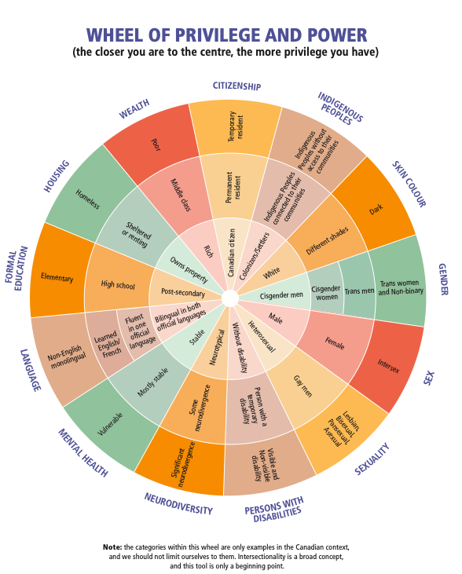
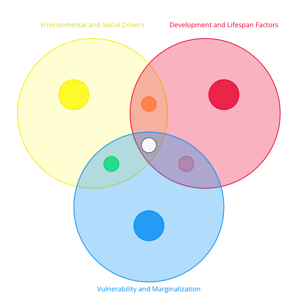

Section 3
Section 3Section 3 Overview: Factors Influencing Mental Health in a Changing Climate
Photo via PexelsWelcome to Section 3: Factors Influencing Mental Health in a Changing Climate
In this section of the curriculum, you will learn:
- The root causes of climate emotions and why they arise in response to climate change.
- The social and environmental drivers that shape our emotional responses, from rising sea levels to media narratives.
- How emotions evolve across the lifespan, with perspectives on developmental stages from youth to older adulthood.
- How broader structures, inequities, and systems of oppression and privilege shape how climate impacts and emotions are disproportionately experienced and navigated.
- The unique challenges faced by and leadership of marginalized communities, who bear disproportionate risks and emotional burdens due to systemic and structural inequities.
- The role of intersectionality in understanding how overlapping identities shape vulnerability and resilience to climate emotions.
This section includes content relating to mental health, climate change, and injustice. Some learners may find these topics challenging to engage with. This information is available to you to engage with as you choose, including choosing not to engage with particular sections. We encourage you to approach the material in ways that support your well-being.
Please remember to:
- Pace yourself
- Take breaks as necessary
- Practice self-care as you work through the curriculum
Resources are available to support yourself in navigating emotions that may arise during this curriculum. Take some time to reflect on what supports you, consider what resources you could connect with as needed, and review the list of ideas we have compiled here:
- If you are in Canada and need immediate mental health support, you can access a list of available resources here.
- You can also access a list of additional supportive resources compiled by the MHCCA team here.
- If you are feeling overwhelmed or in need of a mental pause, you may find support in this list of grounding and presencing techniques.
Module reviewers & contributors
- Kiffer G. Card, Faculty of Health Sciences, Simon Fraser University
- Kaylie Higgs, Mental Health and Climate Change Alliance
- Dana De Benetti, Mental Health and Climate Change Alliance
- Monique Beneteau, Canadian Coalition for Seniors’ Mental Health
Climate emotions are deeply influenced by the environmental and social contexts in which individuals and communities exist. These drivers are often interconnected and act as both triggers and amplifiers of emotional responses to climate change. Understanding these forces provides valuable insight into why people react differently to environmental changes and how these reactions can signal what we value, and prompt actions to protect those values. In this lesson, we will explore some of the various environmental and social drivers of climate emotions, examine their interactions, and discuss strategies to address them effectively.
Before beginning, consider your own experiences relating to your environment and broader social systems that may influence your emotional responses to climate change and its impacts.
Environmental changes, both immediate and gradual, significantly shape our emotional responses to climate change. These changes can evoke a range of emotions depending on the nature and scale of the impact.
Below are some examples of environmental drivers of climate emotions:
- Extreme weather events such as hurricanes, wildfires, and floods can trigger immediate and intense emotions like fear, grief, and anger. For instance, residents displaced by wildfires may experience acute stress and ecological grief over the loss of their homes and local ecosystems.
- The concept of No Natural Disasters, recognized by the United Nations Office for Disaster Risk Reduction (UNDRR), emphasizes that while hazards are natural, disasters are shaped by human decisions, vulnerabilities, and exposure. As a result, emotional responses reflect not only the impacts of the physical event, but also to the underlying inequities and systemic conditions that influence who is most affected.
- Key thinkers like Glenn Albrecht, who introduced solastalgia, and Timothy Morton, known for his work on hyperobjects, explore how large-scale environmental phenomena provoke existential unease and profound emotional responses.
- On the other hand, more gradual environmental degradation, including biodiversity loss, deforestation, and shifting seasonal patterns, leads to more subtle yet equally profound emotions such as unease, sadness, or nostalgia. Individuals with strong connections to impacted lands and places, such as Indigenous communities or farmers, are particularly sensitive to these changes.
- The Biophilia Hypothesis, proposed by E.O. Wilson suggests that humans have an innate connection to nature, and its disruption can result in significant emotional and psychological distress.
- Environmental changes act as emotional signals that alert individuals to potential threats. From an evolutionary psychology perspective, emotions like fear and anger serve as survival mechanisms, prompting actions when people perceive environmental threats. Paul Ekman’s foundational work on primary emotions linked to environmental stressors illustrates how these emotions drive behaviors such as fleeing from wildfires or preparing for storms.
- Repeated exposure to climate-related disasters or ongoing environmental degradation amplifies emotional responses. For example, communities facing recurrent flooding may experience cumulative trauma and heightened anxiety, making it increasingly difficult to maintain emotional stability and resilience. Additionally, this can compound upon existing inequities, oppression, and traumas as well, further challenging community resilience, such as in the example of the frequent flooding faced by the community of Kashechewan First Nation in Section 2: Climate Emotions - Stress and Trauma Responses.
Beyond direct environmental impacts, social factors play a crucial role in shaping climate-related emotions. Political and economic systems, social norms and cultural contexts as well as media narratives are a few examples of how social conditions influence how individuals and communities perceive and respond to climate change.
Below are some examples of social drivers of climate emotions:
- Negligence of government inaction or corporate prioritization of profit over sustainability often evokes emotions such as anger and powerlessness. It can be emotionally challenging when the priorities of the government and political structures do not align with individual goals or values. For example, communities protesting fossil fuel subsidies frequently report feelings of frustration over systemic inertia. In contrast, bold leadership and decisive action, such as the passage of renewable energy legislation, can act as catalysts for hope and empowerment. Amartya Sen’s concept of Development as Freedom links the role of institutions in shaping emotional well-being and agency, highlighting how effective governance can mitigate negative emotions and foster positive ones.
- Social norms and cultural contexts significantly influence how climate concerns are expressed and addressed. In some societies, discussing environmental concerns is normalized, fostering emotional validation and collective action. For instance, Scandinavian countries integrate sustainability into daily life, reducing eco-anxiety through visible progress and communal support. Conversely, in other contexts, climate concerns may be stigmatized or dismissed, leading to isolation and exacerbated feelings of alienation. In regions dependent on fossil fuels, admitting climate concerns might be seen as disloyal or countercultural, reinforcing emotional responses, challenging community cohesion and hindering collective action.
- The way climate change is portrayed in the media significantly affects public emotions. Constant exposure to catastrophic headlines can foster feelings of anxiety, despair, or fatalism. Conversely, solution-focused narratives that highlight progress and collective action can inspire hope and encourage positive emotional responses.
- Social media platforms further amplify both constructive and destructive emotional responses through rapid information sharing. Viral images of climate-related disasters can evoke global grief but also inspire international solidarity and donations, demonstrating the dual impact of media amplification on climate emotions. George Gerbner’s Cultivation Theory explores how prolonged media exposure shapes perceptions and emotions, emphasizing the powerful role of media in either exacerbating fear or fostering optimism.
The interplay between environmental and social drivers creates a complex emotional landscape around climate change. Understanding these interactions is essential for addressing the multifaceted nature of climate emotions.
Below are some examples of how environmental and social drivers of climate emotions may interact with one another to compound them:
- Extreme weather events not only destroy physical infrastructure but also disrupt social networks, including families, friendships, and community bonds. The emotional impact of losing support systems compounds feelings of grief and anxiety. For example, post-hurricane displacement can separate families, intensifying feelings of helplessness and isolation.
- Climate change disproportionately affects marginalized communities, such as racialized communities and socioeconomically disadvantaged groups who often have the least access to resources for adaptation. This unequal burden evokes emotions such as anger, grief, and powerlessness, highlighting systemic injustices.
- There are multiple, overlapping systems of oppression that shape how individuals and communities experience climate change and emotional responses. Systemic oppression refers to the ways in which inequities and harm are ingrained within laws, policies, institutional practices, and broader societal norms, disproportionately affecting certain groups based on identity. In the context of climate change, systems such as racism and colonialism can influence exposure to environmental risks, access to resources, and the emotional responses to climate-related stressors.
- Robert Bullard’s work on environmental justice highlights how these inequities deepen emotional distress and reinforce feelings of vulnerability and injustice
- Similarly, Rob Nixon’s concept of slow violence describes how environmental harms can be gradual, often invisible, and embedded within social and political structures, disproportionately impacting certain communities over time.
- Repeated climate shocks create collective emotional experiences within communities, fostering a sense of shared trauma. Kai Erikson’s concept of collective trauma examines the long-term psychological impacts of disasters on social cohesion, emphasizing how repeated environmental stressors can erode community bonds and collective resilience.
Why Social and Environmental Drivers Matter
Understanding the social and environmental drivers of climate emotions illuminates the intricate interplay between external conditions and internal emotional states. Climate emotions are not isolated reactions; they are shaped by tangible environmental events, systemic forces, and social contexts.
By addressing these drivers comprehensively—through actions such as policy reforms, effective communication, community engagement, and promoting climate justice and equity —we can better understand, address the roots of climate mental health impacts, and support individuals and societies as they navigate the emotional landscape of climate change. When harnessed constructively, these emotions can become powerful motivators for resilience, connection, and meaningful action, driving progress toward a sustainable and equitable future.
Indigenous Perspectives
As this module explores how social and environmental drivers shape climate-related emotions, Indigenous perspectives offer a critical view of how these forces are deeply interconnected. For many Indigenous communities, environmental degradation cannot be separated from the impacts of colonization, as explored in earlier sections. Environmental degradation and colonial practices such as the destruction of ecosystems, displacement from traditional territories, the residential school system, restrictions on land-based practices, and resource extraction are not isolated events—they are also social and cultural traumas. These disruptions affect not only physical survival but also influence mental, spiritual, and community health.
Land is not just a backdrop for life. It is a relative, a teacher, and a source of identity. Reflecting on this connection with the land, Beverly Jacobs, an Indigenous leader and scholar of Mohawk Nation of the Haudenosaunee (Iroquois) Confederacy, explains in the video Land Governance: Past (12:48 minutes): “That was our teachings: that you actually see the faces of our children in our land, and if you see the faces of your children in your land, it's alive”. When land is harmed or taken through colonial dispossession, industrial development, resource extraction, or climate-related environmental change, the resulting distress includes grief for what has been lost and fear for what may come. These feelings are intensified by ongoing social injustices such as poverty, systemic racism, and cultural erasure.
In this context, emotional responses are shaped by centuries of imposed disconnection and disruptions to relationships and responsibilities. Indigenous frameworks emphasize that healing must come through restoring relationships—with land, with each other, and with ancestral ways of knowing. In response to these disrupted relationships and harms to well-being, there are many Indigenous-led initiatives that are working to restore connections to land, culture and community. For example, Land Back is a grassroots, Indigenous-led movement which centers Indigenous land governance, self-determination and ecological restoration. This aligns with the module’s focus on intersecting drivers by showing that the emotional burden of climate change is often compounded for Indigenous Peoples, and that solutions must support both ecological restoration and social justice.
Learn More
Explore What is Land Back? by David Suzuki Foundation which includes a three-part video series that highlights the past, present, and future relating to land governance in conversation with Indigenous scholars.
If you would like to learn more about Land Back, Yellowhead Institute offers a free, online Land Back Course which explores the ways that Canada has dispossessed Indigenous Peoples from the land, and actions that communities are taking in response.
Key Takeaways
- Visible and tangible environmental changes, such as extreme weather events and gradual degradation, trigger a range of emotions from fear and grief to unease and nostalgia.
- Political and economic systems, cultural contexts and media narratives significantly shape how individuals and communities experience and respond to climate change.
- The interaction between environmental and social drivers, including the disruption of social networks, systemic inequities, and trauma create a complex emotional landscape that affects collective resilience and individual well-being.
- Addressing climate emotions effectively requires a comprehensive strategy that includes advocating for stronger environmental policies, reframing media narratives, and building robust social connections.
- Climate emotions, when understood and managed appropriately, can signal what we value and drive proactive actions to protect our environment and communities.
- The emotional impacts of climate change and environmental degradation on Indigenous Peoples are intertwined with the ongoing impacts of colonization, making social justice and ecological restoration both important parts of healing.
- Understanding the drivers of climate emotions is essential for fostering a supportive and resilient society capable of confronting and mitigating the challenges posed by climate change. By recognizing and addressing both environmental and social factors, we can transform emotional responses into catalysts for positive and sustained climate action.
Learning Activities
Below are active learning activities that you can use to enhance your learning experience for the content presented in this module. One version is designed to be done on your own and the other is designed to be done with others.
Objective: You will identify and analyze social and environmental drivers of climate emotions, examine how these factors interact, and discuss strategies for addressing them to foster resilience and proactive climate action.
Instructions:
- Define Drivers of Climate Emotions:
- Begin by defining social and environmental drivers of climate emotions in your own words.
- Write a short paragraph explaining why these drivers are important to understand when addressing climate change.
- Identify Examples of Drivers:
- Reflect on your own experiences or observations. List one example each of:
- Environmental Drivers (e.g., seeing deforestation in your community, experiencing extreme weather).
- Social Drivers (e.g., media headlines, cultural attitudes about climate change).
- Reflect on your own experiences or observations. List one example each of:
- Analyze Interactions Between Drivers:
- Choose one example of an environmental driver and one example of a social driver. Answer the following:
- How do these two drivers interact to shape climate emotions?
- For example: Does a news report about rising sea levels amplify the fear caused by witnessing flooding?
- Choose one example of an environmental driver and one example of a social driver. Answer the following:
- Create a Map of Emotional Impact:
- Draw (or describe in text) a simple “cause-and-effect map” that shows how one environmental and one social driver influence specific emotions.
- Example: A diagram showing how wildfires (environmental driver) and media coverage (social driver) together lead to fear, grief, or motivation to act.
- Draw (or describe in text) a simple “cause-and-effect map” that shows how one environmental and one social driver influence specific emotions.
- Reflection on Solutions:
- Write a short reflection:
- How can understanding these drivers help communities address climate emotions?
- Are certain drivers more likely to lead to helpful outcomes than others?
- What actions can you take, individually or with others, to mitigate negative climate emotions driven by these factors?
- Write a short reflection:
Objective: Groups will collaboratively identify social and environmental drivers of climate emotions, analyze their interactions, and propose strategies to address their impacts on individuals and communities.
Preparation Time: 15-20 minutes to prepare handouts summarizing key drivers and interactions, along with guiding questions.
Time Allocation: 60 minutes.
Facilitator Instructions:
- Set the Stage (10 minutes):
- Introduce the concepts of social and environmental drivers of climate emotions.
- Provide examples from the content (e.g., visible environmental changes, media narratives, systemic inequities).
- Explain the importance of analyzing these drivers and their interactions to understand the emotional landscape of climate change.
- Group Activity: Identify Drivers (15 minutes):
- Divide participants into small groups of 3-5. Assign each group to focus on either:
- Environmental Drivers: Brainstorm examples such as extreme weather, biodiversity loss, or pollution.
- Social Drivers: Brainstorm examples like political inaction, divisive media coverage, or cultural norms.
- Ask groups to document specific ways their assigned drivers influence climate emotions (e.g., fear, anger, hope).
- Divide participants into small groups of 3-5. Assign each group to focus on either:
- Analyze Interactions (15 minutes):
- Regroup and assign mixed teams (combining social and environmental groups).
- Each mixed group selects one environmental driver and one social driver to analyze together.
- Guide them to:
- Explain how the two drivers interact to shape emotional responses.
- Identify examples of compounding effects (e.g., media exaggerating visible climate disasters).
- Propose solutions or strategies to address these interactions (e.g., improving media narratives or community preparedness).
- Present and Discuss (15 minutes):
- Each group presents their findings and proposed strategies.
- Facilitate a larger group-wide discussion with questions like:
- “What patterns or common themes did you notice across groups?”
- “How can communities address the combined effects of these drivers to foster resilience?”
- Reflection (5 minutes):
- End with a reflective prompt:
- “What was the most surprising connection you discovered between environmental and social drivers?”
- “How can understanding these drivers guide personal and collective climate actions?”
- End with a reflective prompt:
Optional Variation:
Provide case studies of communities affected by climate change. Ask groups to analyze the drivers of climate emotions in each case, how they interact, and how interventions could mitigate negative impacts and foster resilience.
Ask learners to journal about the following:
- How do environmental and social drivers shape your own emotional responses to climate change?
- What strategies can you use to manage the impact of these drivers on yourself or others?
- How can addressing these drivers create opportunities for meaningful climate action?
References
- Albrecht, G., Sartore, G. M., Connor, L., Higginbotham, N., Freeman, S., Kelly, B., Stain, H., Tonna, A., & Pollard, G. (2007). Solastalgia: the distress caused by environmental change. Australasian psychiatry : bulletin of Royal Australian and New Zealand College of Psychiatrists, 15 Suppl 1, S95–S98. https://doi.org/10.1080/103985607017012
- Andersen, K., Djerf-Pierre, M., & Shehata, A. (2024). The Scary World Syndrome: News Orientations, Negativity Bias, and the Cultivation of Anxiety. Mass Communication and Society, 27(3), 502–524. https://doi.org/10.1080/15205436.2023.2297829
- Assaduzzaman, M., Filatova, T., Coenen, F., & Lovett, J. (2020). Freedom of choice to migrate: adaptation to climate change in Bangladesh. International Journal of Sustainable Development & World Ecology, 27(7), 652–661. https://doi.org/10.1080/13504509.2020.1754959
- Barbiero, G., & Berto, R. (2021). Biophilia as Evolutionary Adaptation: An Onto- and Phylogenetic Framework for Biophilic Design. Frontiers in psychology, 12, 700709. https://doi.org/10.3389/fpsyg.2021.700709
- Boulton, E. (2016), Climate change as a ‘hyperobject’: a critical review of Timothy Morton's reframing narrative. WIREs Clim Change, 7: 772-785. https://doi.org/10.1002/wcc.410
- Bullard, D. D., Gardezi, M., Chennault, C. & Dankbar, H., (2016) “Climate Change and Environmental Justice: A Conversation with Dr. Robert Bullard”, Journal of Critical Thought and Praxis 5(2). https://www.iastatedigitalpress.com/jctp/article/id/566/
- David Suzuki Foundation. (2021, April 5). Land Governance: Canada’s colonial history. David Suzuki Foundation. https://davidsuzuki.org/story/land-governance-canadas-colonial-history/
- David Suzuki Foundation. (2021, April 5). What is Land Back? David Suzuki Foundation. https://davidsuzuki.org/what-you-can-do/what-is-land-back/
- Demals, T., & Hyard, A. (2014). Is Amartya Sen's sustainable freedom a broader vision of sustainability? Ecological Economics, 102, 33–38. https://doi.org/10.1016/j.ecolecon.2014.03.009
- Ekman, P. (1992). An argument for basic emotions. Cognition and Emotion, 6(3-4), 169–200. https://doi.org/10.1080/02699939208411068
- Erikson Kai T. 1976. Everything in Its Path: Destruction of Community in the Buffalo Creek Flood. New York: Simon and Schuster.
- Fisher, R. (2021, January 27). The invisible impact of slow violence. BBC Future. https://www.bbc.com/future/article/20210127-the-invisible-impact-of-slow-violence
- Gaekwad, J. S., Sal Moslehian, A., Roös, P. B., & Walker, A. (2022). A Meta-Analysis of Emotional Evidence for the Biophilia Hypothesis and Implications for Biophilic Design. Frontiers in psychology, 13, 750245. https://doi.org/10.3389/fpsyg.2022.750245
- Gerbner, G. (1969). Toward “Cultural Indicators”: The Analysis of Mass Mediated Public Message Systems. AV Communication Review, 17(2), 137–148.
- Graham, H., Golder, S. Social media engagement in people and climate change. npj Clim. Action 3, 89 (2024). https://doi.org/10.1038/s44168-024-00167-5
- Heanoy, E. Z., & Brown, N. R. (2024). Impact of Natural Disasters on Mental Health: Evidence and Implications. Healthcare (Basel, Switzerland), 12(18), 1812. https://doi.org/10.3390/healthcare12181812
- Kałwak, W., & Weihgold, V. (2022). The relationality of ecological emotions: An interdisciplinary critique of individual resilience as psychology’s response to the climate crisis. Frontiers in Psychology, 13, Article 823620. https://doi.org/10.3390/healthcare12181812
- Keya, T. A., Leela, A., Ahabib, N., Rashid, M., & Bakthavatchalam, P. (2023). Mental Health Disorders Due to Disaster Exposure: A Systematic Review and Meta-Analysis. Cureus, 15(4), e37031. https://doi.org/10.7759/cureus.37031
- Krouskop, A. S., Cushing, B., Puttman, K., & Temple, A. (Eds.). (2024). Systems of oppression (in Changing society). Open Oregon Educational Resources. https://openoregon.pressbooks.pub/socialchange1e/chapter/oo3-4/
- McCaffery, J., & Boetto, H. (2024). Eco-emotional responses to climate change: A scoping review of social work literature. British Journal of Social Work. https://doi.org/10.1093/bjsw/bcae129
- Nixon, R. (2013). Slow violence and the environmentalism of the poor. Harvard University Press.
- Penrod, Haley, "Media Consumption Effects On Climate Change Beliefs" (2021). Honors College Theses. 103. https://digitalcommons.murraystate.edu/honorstheses/103
- Tuitjer, L., & Dirksmeier, P. (2021). Social media and perceived climate change efficacy: A European comparison. Digital Geography and Society, 2, Article 100018. https://doi.org/10.1016/j.diggeo.2021.100018
- van Daalen, K. R., Kallesøe, S. S., Davey, F., Dada, S., Jung, L., Singh, L., Issa, R., Emilian, C. A., Kuhn, I., Keygnaert, I., & Nilsson, M. (2022). Extreme events and gender-based violence: A mixed-methods systematic review. The Lancet Planetary Health, 6(6), e504–e523. https://doi.org/10.1016/S2542-5196(22)00088-2
- Yellowhead Institute. (2019). Land back: A Yellowhead Institute red paper. https://redpaper.yellowheadinstitute.org/wp-content/uploads/2019/10/red-paper-report-final.pdf
Module reviewers & contributors
- Kiffer G. Card, Faculty of Health Sciences, Simon Fraser University
- Kaylie Higgs, Mental Health and Climate Change Alliance
- Dana De Benetti, Mental Health and Climate Change Alliance
- Lilian Barraclough, College of Social and Applied Human Sciences, University of Guelph & Youth Climate Lab
- Michael Marchand, sqilxw, syilx Nation - Cultural Safety Consultant
- Monique Beneteau, Canadian Coalition for Seniors’ Mental Health
Understanding how climate emotions evolve across different stages of life is essential for providing targeted support and fostering resilience. From childhood awareness to the reflective wisdom of older adulthood, each developmental stage shapes how individuals perceive and respond to the realities of climate change. This lesson explores the dynamic nature of climate emotions throughout the lifespan, highlighting the unique challenges and opportunities at each stage and offering strategies to support individuals in translating their emotions into meaningful climate action.
Climate emotions are not static; they change and deepen as individuals progress through various life stages. A developmental and lifespan perspective allows us to appreciate how cognitive abilities, social roles, and life experiences influence emotional responses to climate change. By understanding these shifts, we can better support individuals in navigating their emotional landscapes and empower them to engage proactively with environmental challenges. In this section we explore some of the emotions that may arise in relation to these developmental stages, recognizing that a wide range of emotions can exist beyond those listed.
As children grow into adolescents, their increasing cognitive abilities enable them to comprehend the complex and often alarming realities of climate change and a growing awareness of the world. This heightened awareness can evoke powerful emotions such as eco-anxiety, fear for the future, and a sense of betrayal.
- Emotional Responses in Youth
- Eco-Anxiety and Fear of the Future
Children and adolescents begin to grasp the long-term implications of climate change, which can cause immediate emotional responses, and can also lead to anxiety about their future and the planet's well-being. - Sense of Betrayal
Children and adolescents may also feel a sense of powerlessness, abandonment, and betrayal by adults and governments that do not seem to be acting in a way that protects, cares for, or values them.
- Eco-Anxiety and Fear of the Future
- The Role of Social Influences
- Family, Schools, Media, and Social Media
Social environments significantly shape how young people experience climate emotions. Role models such as parents, educators, and activists influence youth through their own emotional and behavioral responses to climate issues. For instance, youth activists like Greta Thunberg or Autumn Peltier inspire many young individuals to channel their eco-anxiety into proactive climate action.
- Family, Schools, Media, and Social Media
- Challenges and Opportunities
- Limited Agency vs. Empowerment
While young people may feel limited in their ability to effect change, structured opportunities for engagement, such as school climate clubs and community projects, can foster a sense of empowerment.
- Limited Agency vs. Empowerment
- The Role of Youth in Indigenous Communities
- Youth can bring energy, insight, and innovation, often inspiring hope and action in their communities. First Nations, Métis and Inuit Youth are leading climate action, while incorporating traditional and cultural knowledge alongside contemporary approaches.
Indigenous Youth Climate Action
Autumn Peltier is an Anishinaabe water-rights advocate and global youth environmental activist, she has also been appointed Chief Water Commissioner since 2019. In the video Water protector Autumn Peltier speaks at UN | CBC News (7:38 minutes) Autumn shares powerful insights on the sacredness of water, teachings that have been passed down from her ancestors, and of the injustice of unsafe drinking water in many communities. She also speaks of the importance of intergenerational collaboration and leadership in stating, “Maybe we need to have more Elders and youth together sitting at the decision table when people make decisions about our lands and waters. I said it once, and I will say it again. We can’t eat money or drink oil.” This underscores how youth are both deeply impacted by climate emotions while also transforming them into action, leadership, and intergenerational connection.
In early adulthood, individuals grapple with aligning their climate values with emerging independence, career aspirations, and lifestyle choices. This stage is often marked by a complex interplay of hope and guilt as they strive to balance idealism with practical realities.
- Emotional Complexity
- Hope and Guilt
Young adults often experience a mix of hope for a sustainable future and guilt over actions that may contradict their environmental values. For example, choosing between a high-paying job in an unsustainable industry and a lower-paying role aligned with environmental values can create internal conflict.
- Hope and Guilt
- Identity and Purpose
- Intersecting with Broader Questions
Climate emotions intersect with broader questions of purpose and belonging, making this a critical period for social and emotional support. Finding a sense of identity that incorporates environmental stewardship can enhance personal fulfillment and commitment to climate action.
- Intersecting with Broader Questions
- The Role of Social Networks
- Peer Influence and Workplace Culture
Social networks, including peers and workplace environments, play a pivotal role in shaping climate emotions and behaviors. Supportive environments encourage sustainable behaviors and reduce feelings of guilt or resignation, while unsupportive ones may reinforce negative emotions. Building strong, like-minded networks can enhance motivation and collective efficacy.
- Peer Influence and Workplace Culture
Midlife is characterized by a heightened sense of responsibility, often linked to concerns about future generations and the sustainability of communities. Individuals in this stage might navigate blended emotions of grief, frustration, and hope, drawing on their life experiences to contribute meaningfully to climate initiatives.
- Parental Climate Emotions
- Parental Concern
Parents often view climate emotions through the lens of their children’s futures, which can intensify emotional responses to climate change and a sense of responsibility to protect well-being.
- Parental Concern
- Blended Emotions
- Grief, Frustration, and Hope
Climate emotions in midlife may involve a combination of grief for environmental losses, frustration at systemic inaction, and hope inspired by community efforts.
- Grief, Frustration, and Hope
- Drawing on Life Experience
- Resilience and Resourcefulness
Individuals in midlife can often leverage their established social networks and life experiences to address climate challenges more effectively. Leading local environmental projects or mentoring younger activists exemplifies how life experience enhances resilience and fosters impactful contributions to climate action.
- Resilience and Resourcefulness
Older adults can bring a wealth of experience and wisdom to the climate conversation, often experiencing profound emotions as they witness firsthand the changes in their environments over their lifetimes. This stage may involve reflection on legacy, the role of wisdom-keepers, and navigating the challenges of exclusion from active climate discussions.
- Challenges of Exclusion
- Ageism and Physical Limitations
Despite their valuable perspectives, older adults may face ageism and physical limitations that lead to feelings of exclusion from climate conversations and activism. Addressing these barriers ensures that their contributions are recognized and integrated into broader climate strategies, enhancing community support and intergenerational solidarity.
- Ageism and Physical Limitations
- Witnessing Environmental Change
- Profound Grief and Solastalgia
Older adults often feel deep grief and solastalgia as they observe environmental degradation and loss over time. Farmers witnessing changing rainfall patterns or elders mourning the loss of biodiversity exemplify how long-term environmental changes evoke intense emotional responses.
- Profound Grief and Solastalgia
- Role as Wisdom-Keepers
- Intergenerational Bridges
Older adults can serve as intergenerational bridges, offering historical perspectives, traditional ecological knowledge, and mentorship.
- Intergenerational Bridges
- The Role of Elders in Indigenous Communities
- Elders support younger generations through storytelling, land-based teaching, and ceremony, helping them make sense of fear, anger, or grief related to environmental change.
Elder Teachings of Climate Change
In the video Elder Joanasie speaks to youth about climate change | Climate Atlas of Canada (6:02 minutes), Elder Joanasie, a respected Inuk Elder shares stories with youth of the changes he has observed throughout his life from climate change. Through this teaching, he describes the dramatic changes in his environment and the weather, such as in shifting ice formations and wind patterns. In referring to these changes he states “I have lived in two worlds now” and in closing he emphasizes the importance of working together to take care of the land. This example highlights how Elders share knowledge, lived experience and responsibility to act in their teachings and stories.
Why Developmental Perspectives Matter
By considering how climate emotions evolve across the lifespan, we gain a deeper understanding of the diverse ways people engage with environmental challenges. This developmental lens enables tailored interventions—whether through education, community engagement, or policy—that meet individuals where they are and support them in translating their emotions into meaningful action. Recognizing these shifting emotional landscapes fosters greater empathy, resilience, and collective momentum for addressing the climate crisis.
To fully grasp the complexity of climate emotions across the lifespan, it can be useful to delve into the theoretical frameworks that underpin these emotional responses. Each theory offers a unique lens through which we can understand how individuals interpret and react to the realities of climate change at various stages of their lives.
Some of these theories continue to be discussed, debated, and updated. We provide them here for consideration of key frameworks often used in academia, but encourage you to explore them further if they are of interest to you!
Jean Piaget’s Cognitive Development Theory is a cornerstone of developmental psychology, outlining how individuals progress through distinct stages of cognitive maturity from childhood to adulthood. Piaget identified four main stages: Sensorimotor, Preoperational, Concrete Operational, and Formal Operational. Each stage represents a different level of cognitive complexity and capacity for abstract thinking. While Piaget’s theory remains highly influential, it is important to note that contemporary research has built upon and critiqued aspects of his stage-based model, particularly the rigidity of developmental stages and the underemphasis on social and cultural influences on learning.
- Key Principles and Contributions
- Stages of Development: Piaget proposed that children move through four stages, each characterized by different abilities:
- Sensorimotor (0-2 years): Learning through physical interaction with the environment.
- Preoperational (2-7 years): Development of language and symbolic thinking, yet limited by egocentrism.
- Concrete Operational (7-11 years): Logical thinking about concrete events, understanding of conservation.
- Formal Operational (12 years and up): Ability to think abstractly, reason logically, and plan systematically.
- Constructivism: Piaget emphasized that children actively construct their understanding of the world through experiences and interactions.
- Assimilation and Accommodation: These processes describe how individuals incorporate new information into existing cognitive schemas (assimilation) and adjust their schemas to accommodate new information (accommodation).
- Stages of Development: Piaget proposed that children move through four stages, each characterized by different abilities:
- Application to Climate Emotions
- Formal Operational Stage and Climate Awareness: As individuals enter the Formal Operational stage during adolescence (~12 years onward), their capacity for abstract and systemic thinking allows them to comprehend the complex and multifaceted nature of climate change. This enhanced understanding can lead to heightened emotional responses, such as eco-anxiety and fear for the future.
- Impact on Emotional Responses:
- Increased Activism: Adolescents and young adults, equipped with abstract thinking, may channel their eco-anxiety into proactive engagement, such as joining climate movements or advocating for policy changes.
- Heightened Eco-Anxiety and Despair: The ability to foresee long-term consequences of climate change can also intensify feelings of helplessness and despair, especially if individuals perceive the crisis as insurmountable.
- Educational Implications: Recognizing Piaget’s stages can inform educational strategies that support cognitive and emotional development, helping young people navigate their climate-related emotions constructively. These insights can be further strengthened by integrating more contemporary, socially and culturally informed approaches to learning and development.
Albert Bandura’s Social Learning Theory posits that people learn behaviors, attitudes, and emotional responses through observation, imitation, and modeling within their social environments. Bandura emphasized the importance of social influences and cognitive processes in learning, introducing key concepts such as observational learning, self-efficacy, and reciprocal determinism.
- Key Principles and Contributions
- Observational Learning: Individuals acquire new behaviors by observing others, especially role models, and imitating their actions.
- Self-Efficacy: Bandura introduced the concept of self-efficacy, the belief in one’s ability to succeed in specific situations or accomplish tasks, which plays a critical role in how people approach goals and challenges.
- Reciprocal Determinism: This principle highlights the dynamic interplay between individuals, their behaviors, and their environments, suggesting that each influences the others.
- Application to Climate Emotions
- Role Models and Climate Activism: Young people and adults often emulate the behaviors and emotional responses of influential figures such as parents, teachers, and climate activists. Observing role models who actively engage in climate action can inspire similar emotional and behavioral responses in individuals.
- Example: When adolescents see a teacher passionately advocating for environmental policies, they may develop a stronger commitment to sustainability and engage in related activism themselves.
- Self-Efficacy and Empowerment: Bandura’s emphasis on self-efficacy is crucial in combating feelings of helplessness associated with climate change. By fostering a belief in their ability to effect change, individuals are more likely to engage in proactive behaviors and sustain their commitment to climate action.
- Example: Community workshops that teach sustainable practices can enhance participants’ self-efficacy, making them feel more capable of contributing to environmental preservation.
- Behavioral Influence and Social Norms: Social Learning Theory explains how climate-friendly behaviors can become normalized within a community through consistent modeling and reinforcement. This can reduce eco-anxiety by creating supportive environments where sustainable actions are encouraged and celebrated.
- Example: A workplace that adopts green policies and visibly practices sustainability can influence employees to adopt similar behaviors, fostering a collective sense of responsibility and reducing individual feelings of powerlessness.
- Example: A workplace that adopts green policies and visibly practices sustainability can influence employees to adopt similar behaviors, fostering a collective sense of responsibility and reducing individual feelings of powerlessness.
- Role Models and Climate Activism: Young people and adults often emulate the behaviors and emotional responses of influential figures such as parents, teachers, and climate activists. Observing role models who actively engage in climate action can inspire similar emotional and behavioral responses in individuals.
Erik Erikson’s Psychosocial Development Theory outlines eight stages of human development, each characterized by specific psychological conflicts that contribute to a person’s growth and identity. Erikson emphasized the social and emotional challenges that individuals face at different life stages, proposing that successful resolution of these conflicts leads to healthy psychological development.
- Key Principles and Contributions
- Eight Stages of Development: Each stage involves a central conflict that must be resolved for healthy emotional and social development. The stages are:
- Trust vs. Mistrust (Infancy)
- Autonomy vs. Shame and Doubt (Toddlerhood)
- Initiative vs. Guilt (Early Childhood)
- Industry vs. Inferiority (School Age)
- Identity vs. Role Confusion (Adolescence)
- Intimacy vs. Isolation (Young Adulthood)
- Generativity vs. Stagnation (Midlife)
- Integrity vs. Despair (Older Adulthood)
- Psychosocial Conflicts: Each stage presents a conflict that must be navigated to develop a healthy personality and social relationships.
- Identity Formation: Particularly in adolescence, Erikson highlighted the importance of developing a coherent identity, which includes integrating personal values and beliefs.
- Eight Stages of Development: Each stage involves a central conflict that must be resolved for healthy emotional and social development. The stages are:
- Application to Climate Emotions
- Adolescence (Identity vs. Role Confusion)
- Climate Concerns as Part of Identity: During adolescence, individuals strive to establish their identity. Climate concerns can become a core part of their self-concept, driving engagement in environmental activism as a way to assert their values and sense of purpose.
- Emotional Responses: Adolescents may experience a heightened sense of responsibility and urgency, leading to proactive behaviors such as participating in climate strikes or leading sustainability projects.
- Midlife (Generativity vs. Stagnation)
- Sense of Responsibility: In midlife, individuals focus on contributing to the next generation. Climate emotions in this stage often involve a sense of duty to protect the environment for future generations, motivating leadership and community involvement.
- Blended Emotions: This stage is marked by a combination of grief for environmental losses, frustration at systemic inaction, and hope inspired by community efforts. These emotions drive midlife individuals to take on roles that promote sustainability and resilience.
- Older Adulthood (Integrity vs. Despair)
- Reflection on Legacy: In older adulthood, individuals reflect on their lives and legacies. Climate emotions may involve solastalgia or grief over witnessing environmental degradation or finding meaning and purpose in preserving ecological systems for posterity.
- For some older adults, especially within Indigenous communities, climate emotions are shaped not only by witnessing environmental change, but also by the responsibility of holding and sharing that knowledge.
- Emotional Stability and Wisdom: Older adults can leverage their life experiences to mentor younger generations and contribute to community resilience, fostering a sense of integrity and fulfillment.
- Reflection on Legacy: In older adulthood, individuals reflect on their lives and legacies. Climate emotions may involve solastalgia or grief over witnessing environmental degradation or finding meaning and purpose in preserving ecological systems for posterity.
- Educational and Support Implications: Understanding Erikson’s stages helps in designing interventions that align with individuals’ developmental needs, such as providing identity-affirming climate education for adolescents or leadership opportunities for midlife adults.
- Adolescence (Identity vs. Role Confusion)
John Bowlby’s Attachment Theory emphasizes the importance of secure emotional bonds formed in early childhood, which influence emotional regulation and social relationships throughout an individual’s life. Secure attachments provide a foundation for healthy emotional development, resilience, and the ability to form meaningful connections.
- Key Principles and Contributions
- Secure vs. Insecure Attachments: The quality of early attachments—secure, anxious, avoidant, or disorganized—shapes how individuals perceive and interact with the world.
- Emotional Regulation: Securely attached individuals are better equipped to manage emotions, seek support, and cope with stress.
- Interpersonal Relationships: Attachment styles influence how people form and maintain relationships, impacting their social support networks and community engagement.
- Application to Climate Emotions
- Parental Influence and Climate Grief
- Secure Attachments and Resilience: Individuals with secure attachments are more likely to develop resilience and proactive engagement with climate issues. They feel supported in addressing emotional challenges, reducing feelings of isolation and helplessness.
- Climate Grief and Support Systems: Secure attachments enable individuals to seek and receive support when dealing with eco-anxiety and ecological grief, fostering healthier emotional relationships and coping mechanisms.
- Climate Emotions Across the Lifespan
- Children and Adolescents: Securely attached children are more likely to express their climate concerns openly and seek support from trusted adults. This openness can mitigate intense emotions like fear and anxiety by providing a safe space for discussion and action.
- Adults and Older Adults: Secure attachments in adulthood facilitate effective emotional regulation and community engagement. Older adults with secure attachments can leverage their support networks to address solastalgia and pass on wisdom to younger generations, enhancing collective resilience.
- Therapeutic Implications
- Building Secure Attachments: Therapeutic approaches that focus on strengthening secure attachments can enhance individuals’ ability to cope with climate-related emotions. This includes fostering supportive relationships and developing trust in social interactions.
- Community Support Systems: Creating community support systems that emulate secure attachment environments can provide individuals with the emotional resources needed to navigate climate distress effectively. Examples include peer support groups where individuals safely share experiences and community healing circles that foster collective processing and resilience.
- Parental Influence and Climate Grief
Expanding Attachment Theory
While John Bowlby’s Attachment Theory focuses on early relationships between children and caregivers, more recent research highlights the significance of culture, and how attachment can also extend beyond these bonds.
For example, in Beyond attachment theory: Indigenous perspectives on the child–caregiver bond from a northwest tribal community, these perspectives are explored through conversations with tribal community members including cultural experts, parents/caregivers, or service providers in early childhood education. Through these conversations, themes of community caregiving, family value systems, bonding, traditional teachings, and historical trauma emerged. Importantly, the authors emphasized that historical trauma continues to shape caregiving relationships, influencing how attachment is experienced, expressed, and sustained.
It was found that caregiving connections were positioned within intergenerational relationships, broader family networks, and relationships with the natural world, including land, plants, and other more-than-human relatives. These bonds reflect how responsibility, attachment, and emotional connection are shared across generations and rooted within both human and ecological systems.
Urie Bronfenbrenner’s Ecological Systems Theory examines how different layers of an individual’s environment interact to influence their development. The theory identifies multiple systems—microsystem, mesosystem, exosystem, macrosystem, and chronosystem—that collectively shape an individual’s experiences and behaviors.
- Key Principles and Contributions
- Microsystem: Immediate environments such as family, school, and peer groups.
- Mesosystem: Interconnections between microsystems, like the relationship between family and school.
- Exosystem: External environments that indirectly influence the individual, such as parents’ workplaces or community services.
- Macrosystem: Broader cultural and societal influences, including laws, cultural norms, and economic conditions.
- Chronosystem: The dimension of time, encompassing life transitions and historical events.
- Interconnectedness of Systems: Bronfenbrenner emphasized that changes in one system can ripple through and impact other systems, highlighting the complexity of environmental influences on development.
- Application to Climate Emotions
- Multilevel Influences on Climate Emotions
- Microsystem: Family attitudes toward the environment directly impact an individual’s climate emotions. Supportive family environments that prioritize sustainability can foster positive emotional responses and proactive behaviors.
- Mesosystem: The interplay between different microsystems, such as school and home, shapes how climate emotions are experienced and expressed. For example, climate education at school reinforces sustainable practices encouraged at home.
- Exosystem: Community resources and local policies influence individuals’ ability to engage in climate action. Access to green spaces, recycling programs, and community initiatives can mitigate feelings of powerlessness and enhance emotional well-being.
- Macrosystem: Societal attitudes and cultural values regarding the environment shape collective climate emotions. Societies that prioritize environmental conservation and sustainable development foster a sense of hope and collective responsibility.
- Chronosystem: Historical climate events, such as climate-related disasters or significant policy changes, impact the long-term emotional responses to climate change. These events can either heighten eco-anxiety or inspire resilience and proactive engagement.
- Systemic Support and Intervention
- Comprehensive Strategies: Understanding the multiple layers of influence allows for the development of comprehensive strategies that address individual, community, and societal factors contributing to climate emotions.
- Policy and Community Initiatives: Implementing policies that support environmental sustainability and creating community initiatives that promote collective action can enhance positive emotional responses and reduce climate distress.
- Example Applications
- Educational Programs: Schools integrating climate education into their curricula can influence students’ climate emotions by providing knowledge, fostering a sense of agency and building awareness to the interconnectedness of decisions and actions.
- Community Resilience Projects: Local initiatives like community gardens or renewable energy projects can strengthen social networks and provide tangible ways for individuals to engage with climate action, reducing feelings of helplessness.
- Multilevel Influences on Climate Emotions
Indigenist Ecological Systems Model
In Centering Indigenous Knowledges and Worldviews: Applying the Indigenist Ecological Systems Model to Youth Mental Health and Wellness Research and Programs, an adapted version of Bronfenbrenner’s Ecological Systems Theory is applied through the lens of Indigenous knowledge and worldviews. This model is used in the context of strength-based case study examples of Indigenous youth in Canada, Australia, New Zealand, and the United States.
The authors describe how, through this model, mental well-being is framed from a holistic perspective, “where the individual is understood within a highly relational context, interconnected with historical and cultural contexts, and with ancestors, family, community, spirit, lands, and future generations”. A notable difference in this version is that the individual is not at the center of the layered circles, but embedded in the third layer, following history and culture, signifying the importance of these interconnected elements in shaping youth well-being and development.
Together, Ecological Systems Theory and the Indigenist Ecological Systems Model highlight the importance of relational, cultural, and systemic contexts in shaping individual experiences.
Carl Rogers’ Person-Centered Therapy, also known as Client-Centered Therapy, is a humanistic approach that emphasizes the importance of the therapeutic relationship and the individual's capacity for self-healing and personal growth. Rogers believed that creating a supportive and nonjudgmental environment enables individuals to explore and understand their emotions, leading to greater self-awareness and positive change.
- Key Principles and Contributions
- Unconditional Positive Regard: Therapists provide nonjudgmental acceptance and support, fostering a safe space for clients to express their true selves.
- Empathy: Deep, genuine understanding of the client’s feelings and experiences is central to the therapeutic process.
- Congruence: Therapists are authentic and transparent, promoting trust and openness in the therapeutic relationship.
- Self-Actualization: Emphasizes the innate drive toward personal growth and fulfillment, supporting individuals in achieving their full potential.
- Application to Climate Emotions
- Empathy and Validation
- Creating Safe Spaces: Person-Centered Therapy principles can be applied in climate-related support settings by actively listening to individuals’ climate concerns and validating their emotional experiences. This approach reduces feelings of isolation and stigma associated with climate distress.
- Example: Facilitators in climate support groups use open-ended questions and reflective listening to help participants articulate their eco-anxiety and ecological grief, fostering a sense of being heard and understood.
- Facilitating Self-Awareness and Growth
- Encouraging Exploration: By providing a nonjudgmental environment, individuals are encouraged to explore their climate emotions deeply, leading to greater self-awareness and the ability to transform these emotions into proactive actions.
- Example: Workshops that incorporate person-centered techniques allow participants to reflect on their climate-related feelings and identify personal values and goals related to environmental stewardship.
- Promoting Self-Efficacy and Agency
- Supporting Personal Growth: Person-Centered Therapy empowers individuals to take ownership of their climate actions by fostering a sense of agency and self-efficacy.
- Example: Counseling sessions that emphasize clients’ strengths and capacities can help individuals move from feelings of helplessness to active engagement in climate initiatives.
- Enhancing Therapeutic Relationships
- Building Trust and Rapport: The principles of unconditional positive regard and congruence help build strong therapeutic relationships, which are essential for effective support and intervention in climate-related emotional distress.
- Example: Mental health professionals trained in person-centered approaches can better connect with clients, facilitating meaningful dialogues about climate emotions and pathways to resilience.
- Empathy and Validation
Explore
Intergenerational and youth-led climate initiatives offer meaningful ways to transform climate concern into connection, learning, and action. These approaches emphasize relationship-building, shared knowledge, and empowering communities across age groups to collaboratively respond to climate challenges. Below are a few examples of climate action in practice.
- The Climate Kinship Project by Kawartha World Issues Centre in Collaboration with For Our Grandchildren is an excellent example of intergenerational climate mentoring and relationship building. It connects seniors (55+) and youth (15–30) for collaborative workshops, meaningful conversations and shared climate action.
- Suzuki Elders is a voluntary network of Elders working with younger generations in environmental dialogue, mentoring, and action.
- Youth Climate Engagement Strategy by the City of Toronto and prepared by Youth Climate Action in Toronto is an example of a practical policy and engagement framework developed for and in collaboration with youth.
- Youth Climate Corps BC is a non-profit public program that builds on youth leadership to foster climate resilience and a livable, low-carbon future while paying young people in British Columbia a living wage.
- Indigenous Climate Action is an Indigenous-led organization that climate action across Canada. Its Youth Leadership program empowers young people to develop leadership skills while strengthening connections to culture, community and the land.
Youth Activism and the Power of Intergenerational Collaboration
Adults play a key role in supporting youth as they navigate climate emotions and grow into leadership roles. Youth are powerful leaders and changemakers, and their voices must be valued, respected and included in decision making processes and climate organizing spaces. Intergenerational support can help youth feel supported and empowered.
One useful framework for building this support is the 7 P’s Framework (Cahill & Dadvand), which can be adapted for climate organizing:
- Place – Consider how space (physical, virtual, social) affects youth participation.
- Protection – Ensure political, social, and psychological safety.
- Purpose – Clearly communicate goals and give youth a role in shaping them.
- Power Relations – Balance roles and responsibilities equitably.
- Perspective – Honor the diverse identities, cultures, and experiences youth bring.
- Positioning – Frame youth not just as learners or victims, but as leaders.
- Process – Involve youth meaningfully throughout all stages of program or project development.
By combining developmental understanding with structured frameworks like the 7 P’s, programs can create environments where youth feel empowered to channel climate emotions into proactive leadership, collaboration, and sustained environmental action. Intergenerational relationships enrich youth engagement, provide continuity across generations, and strengthen the collective capacity for climate resilience.
Indigenous Perspectives
As this module explores how climate emotions develop across different stages of life, Indigenous perspectives and worldviews offer powerful intergenerational lenses. In many Indigenous cultures, Elders and Youth hold sacred roles in the well-being of the community and land. Elders are not simply older adults; they are Knowledge Keepers, storytellers, and guides who carry teachings about resilience, responsibility, and the cycles of life. Youth, in turn, are seen as vision holders and future ancestors, entrusted with carrying those teachings forward and shaping what is yet to come. These roles are not fixed by age but defined by relationship, responsibility, and participation in the shared work of caring for land and community. In times of disruption, Indigenous teachings emphasize the importance of balance between generations—walking side by side, each with a role to play. This perspective aligns with the developmental framing of the module by illustrating how emotional responses to climate change are shaped, supported, and strengthened through intergenerational relationships grounded in cultural continuity and collective care.
How do the roles of Elders and youth in relation to land and community contribute to your understanding of how climate emotions are experienced, shared, and supported across generations?
Key Takeaways
- Climate emotions change and deepen across different life stages, influenced by cognitive abilities, social roles, and life experiences.
- Each developmental stage—childhood, adolescence, early adulthood, midlife, and older adulthood—presents unique emotional challenges and opportunities for climate engagement.
- Understanding theories such as Piaget’s cognitive development, Bandura’s Social Learning Theory, Erikson’s psychosocial stages, Attachment Theory, Bronfenbrenner’s Ecological Systems Theory, and Person-Centered Therapy provides insight into how climate emotions manifest and can be supported.
- Effective support requires age-appropriate education, aligning values with actions, fostering leadership, and creating inclusive intergenerational programs.
- Across all stages, connection, validation, and functional emotional responses are crucial for fostering resilience and motivating climate action.
- A developmental and lifespan perspective allows for comprehensive strategies that address the evolving emotional needs of individuals, enhancing collective resilience and driving meaningful climate progress.
- In many Indigenous cultures, intergenerational relationships between youth and Elders creates emotional resilience and connection across the lifespan.
Understanding the developmental and lifespan perspectives on climate emotions is essential for fostering a supportive and resilient society capable of confronting and mitigating the challenges posed by climate change. By recognizing and addressing the unique emotional experiences at each life stage, we can create tailored interventions that empower individuals and communities to engage effectively and sustainably with the climate crisis.
Learning Activities
Below are active learning activities that you can use to enhance your learning experience for the content presented in this module. One version is designed to be done on your own and the other is designed to be done with others.
Objective: You will examine how climate emotions evolve through different life stages, explore theoretical frameworks explaining these changes, and design age-appropriate strategies for fostering climate resilience and engagement.
Instructions:
- Choose a Life Stage to Explore:
- Select one life stage from the following:
- Childhood and Adolescence
- Early Adulthood
- Midlife
- Older Adulthood
- Select one life stage from the following:
- Learn About the Life Stage:
- Reflect on how climate emotions might manifest in this stage, considering factors like:
- Cognitive development (e.g., Piaget’s theory of cognitive development).
- Social roles (e.g., balancing family, career, and community in midlife).
- Emotional focus (e.g., Erikson’s psychosocial stages).
- Reflect on how climate emotions might manifest in this stage, considering factors like:
- Analyze Emotional Drivers and Challenges:
- Write a brief paragraph about:
- What climate emotions are most likely to emerge at this stage (e.g., anxiety, hope, responsibility).
- What environmental or social drivers may influence these emotions.
- Write a brief paragraph about:
- Design an Intervention or Support Strategy:
- Develop a specific age-appropriate strategy to help individuals at this stage engage constructively with climate emotions.
- Example: For children, create a fun educational game about climate solutions.
- Example: For older adults, organize intergenerational storytelling circles about environmental change.
- Develop a specific age-appropriate strategy to help individuals at this stage engage constructively with climate emotions.
- Reflect on Your Work:
- Write a short reflection:
- Why did you choose this life stage?
- How do you think your strategy could help individuals in this stage?
- What challenges might arise in implementing your idea?
- Write a short reflection:
Objective: Groups will collaboratively explore how climate emotions manifest across life stages, analyze theoretical frameworks, and design tailored strategies to foster resilience and engagement at each stage.
Preparation Time: 10-15 minutes to prepare summaries of life stages and relevant theories (e.g., Piaget, Erikson, Bronfenbrenner).
Time Allocation: 60 minutes.
Facilitator Instructions:
- Set the Context (10 minutes):
- Provide an overview of how climate emotions change across the lifespan.
- Introduce theoretical frameworks (e.g., Piaget’s stages of cognitive development, Erikson’s psychosocial stages) and their relevance to climate emotions.
- Explain the task: Each group will focus on a life stage, analyze the emotional dynamics, and create age-appropriate strategies for engagement.
- Group Work: Explore Life Stages (20 minutes):
- Divide learners into four groups and assign each group a life stage:
- Group 1: Childhood and Adolescence
- Group 2: Early Adulthood
- Group 3: Midlife
- Group 4: Older Adulthood
- Provide guiding questions:
- What climate emotions are most prominent in this stage?
- What challenges and opportunities arise at this stage for engaging with climate issues?
- How do relevant theories (e.g., Bandura, Erikson) help explain these dynamics?
- Divide learners into four groups and assign each group a life stage:
- Design Interventions (20 minutes):
- Each group designs one age-appropriate intervention to address climate emotions and foster resilience:
- For example: A storytelling activity for children to build hope and connection.
- For example: A workplace sustainability challenge for midlife adults balancing responsibilities.
- Groups should outline:
- The goal of their strategy.
- Steps to implement it.
- How it addresses the unique emotional needs of their assigned life stage.
- Each group designs one age-appropriate intervention to address climate emotions and foster resilience:
- Present and Discuss (10 minutes):
- Groups present their strategies to the larger group.
- Facilitate a discussion with questions like:
- “How do these strategies align with the needs of the life stage?”
- “What common themes emerged across life stages?”
- Reflection (5 minutes):
- Conclude with a reflective prompt:
- “How can understanding lifespan perspectives on climate emotions enhance climate resilience and engagement?”
- “Which life stage do you think requires the most support and why?”
- Conclude with a reflective prompt:
Optional Variation:
Assign groups to design a multigenerational program that connects people across life stages to address climate emotions collectively (e.g., mentorship programs pairing young activists with older advocates).
Ask participants to journal about:
- How do their own life experiences influence their climate emotions?
- What strategies would they personally find helpful at their current life stage?
- How can they apply what they’ve learned to support others in their community?
References
- Babakr, Z. H., Mohamedamin, P., & Kakamad, K. (2019). Piaget’s cognitive developmental theory: Critical review. Education Quarterly Reviews, 2(3), 517–524. https://doi.org/10.31014/aior.1993.02.03.84
- Blair, L. (2011). Ecopsychology and the person-centred approach: Exploring the relationship. Counselling Psychology Review, 26(1), 43–53. https://doi.org/10.53841/bpscpr.2011.26.1.43
- Bowlby, J. (1969). Attachment. Attachment and loss: Vol. 1. Loss. New York: Basic Books.
- Bronfenbrenner, U. (1979). The ecology of human development: Experiments by nature and design. Harvard University Press.
- Case, R., Hayward, S., Lewis, M., & Hurst, P. (1988). Toward a neo-Piagetian theory of cognitive and emotional development. Developmental Review, 8(1), 1–51. https://doi.org/10.1016/0273-2297(88)90002-4
- Cahill, H., & Dadvand, B. (2018). Re‑conceptualising youth participation: A framework to inform action. Children and Youth Services Review, 95, 243–253. https://doi.org/10.1016/j.childyouth.2018.11.001
- Di Fabio, A., & Svicher, A. (2024). The challenge of eco-generativity. Embracing a positive mindset beyond eco-anxiety: a research agenda. Frontiers in psychology, 15, 1173303. https://doi.org/10.3389/fpsyg.2024.1173303
- Field, E., & Barraclough, L. (2025). Applying the 7P framework to youth–adult partnerships in climate organizing spaces: “If we are going to be the ones living with climate change, we should have a say”. Youth, 5(3), 66. https://doi.org/10.3390/youth5030066
- Fielding, K. S., & Hornsey, M. J. (2016). A social identity analysis of climate change and environmental attitudes and behaviors: Insights and opportunities. Frontiers in Psychology, 7, Article 121. https://doi.org/10.3389/fpsyg.2016.00121
- Galway, L. P., & Field, E. (2023). Climate emotions and anxiety among young people in Canada: A national survey and call to action. Journal of Climate Change and Health, 9, 100204. https://doi.org/10.1016/j.joclim.2022.100204
- Green, C., Kalvaitis, D., & Worster, A. (2015). Recontextualizing psychosocial development in young children: a model of environmental identity development. Environmental Education Research, 22(7), 1025–1048. https://doi.org/10.1080/13504622.2015.1072136
- Hahn, E. R. (2021). The developmental roots of environmental stewardship: Childhood and the climate change crisis. Current Opinion in Psychology, 42, 19–24. 10.1016/j.copsyc.2021.01.006
- Harker-Schuch, I. (2019). Why Is Early Adolescence So Pivotal in the Climate Change Communication and Education Arena?. In: Leal Filho, W., Hemstock, S. (eds) Climate Change and the Role of Education. Climate Change Management. Springer, Cham. https://doi.org/10.1007/978-3-030-32898-6_16
- Heald, S. (2017). Climate Silence, Moral Disengagement, and Self-Efficacy: How Albert Bandura’s Theories Inform Our Climate-Change Predicament. Environment: Science and Policy for Sustainable Development, 59(6), 4–15. https://doi.org/10.1080/00139157.2017.1374792
- Hele, K. (2021). Indigenous Elders in Canada. In The Canadian Encyclopedia. https://thecanadianencyclopedia.ca/en/article/indigenous-elders-in-canada
- Hickman, C., Marks, E., Pihkala, P., Clayton, S., Lewandowski, R. E., Mayall, E. E., Wray, B., Mellor, C., van Susteren, L., & others. (2021). Climate anxiety in children and young people and their beliefs about government responses to climate change: A global survey. The Lancet Planetary Health, 5(12), e863–e873. https://doi.org/10.1016/S2542-5196(21)00278-3
- Kennedy, A. M., & Gislason, M. K. (2022). Intergenerational approaches to climate change mitigation for environmental and mental health co-benefits. The Journal of Climate Change and Health, 7, 100132. https://doi.org/10.1016/j.joclim.2022.100132
- Matsuba, M. K., Alisat, S., & Pratt, M. W. (Year). Environmental activism in emerging adulthood. In L. M. Padilla-Walker & L. J. Nelson (Eds.), Flourishing in emerging adulthood: Positive development during the third decade of life (Chapter 7). Oxford.
- McLeod, L. J., Kitson, J. C., Dorner, Z., Tassell-Matamua, N. A., Stahlmann-Brown, P., Milfont, T. L., & Hine, D. W. (2024). Environmental stewardship: A systematic scoping review. PloS one, 19(5), e0284255. https://doi.org/10.1371/journal.pone.0284255
- Milfont, T. L., & Sibley, C. G. (2011). Exploring the concept of environmental generativity. International Journal of Hispanic Psychology, 4(1). Nova Science Publishers.
- Nisa, C. F., Bélanger, J. J., Schumpe, B. M., & Sasin, E. M. (2021). Secure human attachment can promote support for climate change mitigation. Proceedings of the National Academy of Sciences of the United States of America, 118(37), Article e2101046118. https://doi.org/10.1016/j.jenvp.2022.101899
- Nartova-Bochaver, S. K., Donat, M., Kiral Ucar, G., Korneev, A. A., Heidmets, M. E., Kamble, S., Khachatryan, N., Kryazh, I. V., Larionow, P., Rodríguez-González, D., Serobyan, A., Zhou, C., & Clayton, S. (2022). The role of environmental identity and individualism/collectivism in predicting climate change denial: Evidence from nine countries. Journal of Environmental Psychology, 84, Article 101899. https://doi.org/10.1016/j.jenvp.2022.101899
- O’Keefe, V. M., Fish, J., Maudrie, T. L., Hunter, A. M., Tai Rakena, H. G., Ullrich, J. S., Clifford, C., Crawford, A., Brockie, T., Walls, M., Haroz, E. E., Cwik, M., Whitesell, N. R., & Barlow, A. (2022). Centering Indigenous knowledges and worldviews: Applying the Indigenist ecological systems model to youth mental health and wellness research and programs. International Journal of Environmental Research and Public Health, 19(10), 6271. https://doi.org/10.3390/ijerph19106271
- Vesely, S., Masson, T., Chokrai, P., Becker, A. M., Fritsche, I., Klöckner, C. A., Tiberio, L., Carrus, G., & Panno, A. (2021). Climate change action as a project of identity: Eight meta-analyses. Global Environmental Change, 70, Article 102322. https://doi.org/10.1016/j.gloenvcha.2021.102322
Module reviewers & contributors
- Kiffer G. Card, Faculty of Health Sciences, Simon Fraser University
- Kaylie Higgs, Mental Health and Climate Change Alliance
- Dana De Benetti, Mental Health and Climate Change Alliance
- Michael Marchand, sqilxw, syilx Nation - Cultural Safety Consultant
- Monique Beneteau, Canadian Coalition for Seniors’ Mental Health
- Ashley Stoltz, Faculty of Health Sciences, Simon Fraser University
Climate emotions and mental health impacts are profoundly shaped by social structures and systemic inequities, and are also closely intertwined with them. Climate change does not occur in isolation, as it has been driven by, and is directly linked with current and historic injustices such as colonialism. In turn, it also compounds, multiplies, and exacerbates existing inequities, causing disproportionate impacts on communities already systemically marginalized.
In this sense, the emotional and physical toll of climate change is not experienced uniformly across all populations. Understanding these inequities is fundamental to appropriately addressing climate health impacts, ensuring these harmful systems are not perpetuated, and recognizing who bears the heaviest burdens of the climate crisis and why. Further, acknowledging and addressing these inequitable systems and structures is essential to building individual and community resilience, navigating injustice, addressing some of the key drivers of climate change, and ensuring a trauma-informed approach to climate mental health.
This module sheds light on the underlying systems of power and inequality that shape both exposure to climate impacts and the emotional responses that accompany them.
Marginalization and Vulnerability
The emotional and physical impacts of climate change are distributed unevenly, with inequitable systems and structures causing some communities to disproportionately experience climate impacts, under-resourcing, and varying forms of oppression that can hinder resilience.
In this way, marginalized and vulnerable communities often face the greatest challenges. Marginalization and vulnerability, though distinct, are interrelated concepts that reveal critical insights into how systemic inequalities influence individuals' and communities' experiences of climate change. This section explores the definitions, theoretical frameworks, and practical implications of marginalization and vulnerability, highlighting their roles in shaping climate emotions and responses.
Vulnerability: Risk Shaped by Systems and Contexts
Vulnerability refers to the degree to which individuals or communities are at risk of harm from climate impacts. It is not a fixed trait but a dynamic condition influenced by various social, economic, and environmental factors.
- Defining Vulnerability
Vulnerability encompasses the susceptibility to adverse effects of climate change, determined by factors such as income, education, housing, and access to healthcare. The Social Determinants of Health (SDOH) framework highlights how these conditions influence an individual’s or community’s ability to cope or adapt with climate-related stressors.
- Key Contributions:
- Sir Douglas Black chaired the working group on equalities in health in the United Kingdom, which produced The Black Report (1980). This report demonstrated how health disparities were linked to social and economic conditions.
- Michael Marmot later chaired the World Health Organization Commission of Social Determinants of Health, which produced Closing the gap in a generation: health equity through action on the social determinants of health (2008). This report further emphasized that health inequalities and inequities arise due to “the circumstances in which people grow, live, work, and age, and the systems put in place to deal with illness.”
- Historical and contemporary work on the SDOH in Canada traces back through many contributions and collaborative initiatives such as the Lalonde Report (1974) and broader public health work and literature.
- Vulnerability Is Not Fixed
Vulnerability is fluid and can change over time based on intersecting social, economic, and environmental factors. - Example: An older adult living in a well-resourced area with access to cooling centers is less vulnerable to heatwaves than someone in a poorly resourced region.
- Physical Vulnerabilities and Social Amplifiers
Certain vulnerabilities, such as age or chronic illness, can have biological aspects, but social systems facilitate and exacerbate these vulnerabilities.- Example: A person with a disability may face greater challenges during a hurricane due to inaccessible transportation or shelters, highlighting how social infrastructure, policy, and planning can amplify physical vulnerabilities.
- Key Contributions:
Rethinking Vulnerability: Who is Considered Vulnerable?
A young child lives with their family in an urban neighbourhood, in close proximity to an industrial site which emits large amounts of air pollution. Since moving to this community a few years prior, the child’s asthma has been worse. Children breathe more rapidly and spend more time being active outdoors relative to adults. These factors make them especially susceptible to the harms of air pollution, which might suggest that they are more vulnerable due to biological and behavioural traits. However, while children do have characteristics that can make them more sensitive to pollution, these factors alone do not fully explain the risk. In this scenario, vulnerability largely arises from harmful conditions created by social, environmental, and structural factors.
The child’s risk is also produced by:
- Air pollution from nearby industrial activity
- Policies and regulations that influence safety and air quality in indoor and outdoor spaces
- Inequitable exposure across communities
- Access to stable housing and educational spaces with good air quality
- Climate change impacts on air circulation, heat wave frequency, and overall temperatures, potentially amplifying air pollution and trapping it for longer periods closer to the ground
As you move through the rest of this module and through other sections of the curriculum, you will notice specific populations highlighted as experiencing increased vulnerability to climate change. As you engage with these examples, we invite you to reflect on the broader systems, structures, and conditions that shape this vulnerability, rather than only considering individual characteristics.
Marginalization: Social Exclusion and Inequity
Marginalization involves the systematic exclusion and oppression of individuals and groups from power, resources, and decision-making processes within structures shaped by systems such as colonialism, racism, and economic inequality. This exclusion intensifies the impacts of climate change on already disadvantaged populations.
- Defining Marginalization
Marginalization refers to the processes through which certain groups are excluded or pushed to the margins of society and power, limiting their access to essential resources and opportunities.
- Key Frameworks:
- Structural Violence: Explains how societal structures can cause harm by preventing individuals from meeting their basic needs. The concept of Structural Violence introduced by Johan Galtung, explains how institutionalized inequalities harm marginalized communities, often in invisible ways.
- Critical Race Theory: Pioneered by thinkers such as Derrick Bell and Kimberlé Crenshaw, examines how systemic racism underpins unequal access to environmental protections and resources.
- Environmental Racism and Climate Impacts
Communities of color and low-income populations are disproportionately exposed to environmental hazards such as toxic waste sites, polluted air, and urban heat islands. - Robert Bullard highlighted how environmental racism creates unequal exposure to environmental risks, exacerbating both physical and emotional vulnerabilities.
- Ingrid Waldron, a Canadian scholar and activist has also done extensive work relating to environmental racism, particularly in Black and Indigenous communities.
- Key Frameworks:
Learn More
- To learn about the history of environmental justice, you can watch The Father of Environmental Justice Reflects on the Movement He Helped to Start | Scientific American (5:23 minutes) where Robert Bullard discusses how the environmental justice movement began and has evolved.
- The book There’s Something in the Water and documentary of the same name, by Ingrid Waldron present a case study exploring the health impacts of environmental hazards in Nova Scotia, and how environmental racism is having impacts on Black and Indigenous communities.
- Marginalization of Indigenous Voices
Indigenous communities face unique forms of marginalization due to colonialism and its related historic and ongoing policies and practices. This includes policies preventing First Nations from hiring lawyers (until 1951), attending post-secondary education (until 1951 without losing Status), and voting in federal elections (until 1960), in addition to the degradation or loss of their lands, which hold cultural and spiritual significance. - Vine Deloria Jr. and Winona LaDuke have explored how colonial legacies and ongoing environmental exploitation impact the emotional well-being and sovereignty of Indigenous Peoples, fostering grief and anger over the loss of their heritage and environment.
Intersections of Marginalization and Vulnerability
Marginalization and vulnerability often intersect, creating compounded effects that heighten the risks and emotional burdens faced by certain groups.
- Compounding Effects
Vulnerability is frequently intensified by marginalization, resulting in a compounding effect. For example, women in patriarchal societies may face additional gender-based violence and take on caregiving roles during climate-related crises, limiting their access to resources and increasing their emotional and physical burdens. - Systemic Inequities Across the Lifespan
Marginalized groups experience cumulative, systemic disadvantages that escalate their vulnerability over time. The Allostatic Load Theory by Bruce McEwen and Elliot Stellar explains how chronic stress, often stemming from systemic oppression, contributes to the earlier onset of health issues, further increasing vulnerability. - Colonization and Intergenerational Trauma
The legacy of colonization shapes both historical and present-day vulnerabilities, particularly for Indigenous communities. Maria Yellow Horse Brave Heart’s concept of Historical Trauma examines how intergenerational effects of colonization impact mental health and resilience, linking environmental degradation with cultural and emotional loss.
As you have learned, the impacts of climate change are not felt or experienced equally across all populations, with some groups disproportionately affected due to health, social, systemic, economic, geographical, or occupational factors.
These experiences are not mutually exclusive. People and communities may experience multiple overlapping challenges and protective factors that uniquely shape their experiences of climate change and its impacts. In this sense, it is critical to also apply an intersectional lens, as discussed further in the next module, Section 4: Intersectionality.
The list below outlines some key groups that are disproportionately impacted by climate change. While not exhaustive, and varying between regions and contexts, it provides a starting point to better understand which populations are often most affected.
People who are marginalized or vulnerable due to social structures, health care access, and physical, mental, or developmental status.
- People with Health Conditions and/or Disabilities
- Face increased risk of adverse health outcomes from climate-related events and environmental extremes.
- Example: Hospital admissions have been found to be 30% more likely for those with diabetes than the general population during extreme heat events.
- May experience worsening of existing health conditions due to climate-related events.
- Example: Wildfire smoke can exacerbate asthma or other respiratory illnesses.
- May encounter additional barriers to accessing care, information, or emergency resources.
- Experience added challenges with evacuation, medication access, or daily coping during climate disruptions.
- Face increased risk of adverse health outcomes from climate-related events and environmental extremes.
- People with Mental Health Conditions and/or Neurodivergence
- Are more susceptible to climate-related distress or worsening of pre-existing mental health conditions such as anxiety, depression, or PTSD.
- May experience heightened sensitivity to environmental conditions, changes in routine, and/or difficulty coping during emergencies, times of instability, or temperature extremes.
- May be additionally impacted due to use of certain medications.
- Example: Medications prescribed for conditions such as schizophrenia, ADHD, and depression can impair the body’s ability to regulate temperature, increasing vulnerability to heat.
- Children and Youth
- Are physiologically more vulnerable to the health risks of climate change.
- Example: Having an increased respiratory rate and being more active outdoors increases negative effects of air pollution.
- May experience climate emotions more intensely and may not be equipped to respond, as age and developmental stage influence the intensity of how climate emotions are felt and experienced.
- Are more likely to experience climate-related events and impacts throughout their lifetime.
- Are generally excluded from voting and decision making spaces.
- Are physiologically more vulnerable to the health risks of climate change.
- Older Adults
- May be physiologically less able to adapt to environmental hazards.
- Example: Reduced tolerance to temperature extremes such as heat.
- Are more likely to have pre-existing medical conditions or physical limitations.
- May require additional supports to manage health risks and maintain well-being.
- May be physiologically less able to adapt to environmental hazards.
Groups facing structural barriers, discrimination, or inequities that amplify climate-related risks.
- Racialized Communities
- Experience greater exposure to environmental and climate-related harms due to systemic inequities as well as acts of environmental racism and injustice including practices such as redlining and placements of communities in or near sacrifice zones by white decision makers.
- May experience a lack of culturally-relevant mental health support, and face cultural and/or racial stigma in accessing mental health care.
- Face amplified health inequities as climate change intensifies existing disparities.
- Example: In some instances, elevated temperatures have been associated with increased illness and mortality in adults of colour when compared to white populations.
- Encounter compounding traumas at the intersection of racism, colonialism, climate change, and other intersections of identities and experiences.
- Indigenous Peoples
Experience all of the factors impacting racialized communities above as well as:
- The impact of climate change on cultural practices, land, food and medicine sources, and well-being. Additionally, this can exacerbate existing colonial impacts on culture and land, deepening and furthering ongoing inequities and traumas.
- May experience heightened and compounding effects due to ongoing colonialism, racism, displacement, and barriers to accessing equitable, culturally safe supports.
- May be located in areas at higher risk of climate extremes due to colonial policies and displacement.
- Example: First Nations communities make up 42% of evacuations due to wildfires but only make up 5% of people living in Canada.
- People Living in the Global South
- Are disproportionately affected by climate change due to socio-economic, political, and systemic inequities.
- Often face insufficient adaptation and mitigation supports from wealthier and/or less impacted countries, and may be underrepresented in decision-making spaces and excluded from climate migration, increasing risk from climate-induced disasters
- Often have fewer resources to adapt due to historic exploitation and ongoing colonial dynamics.
- May already be experiencing climate change impacts due to systemic impacts and geographic susceptibility, even though they often contribute the least to climate change itself.
- 2SLGBTQIA+ and Gender Diverse Individuals
- May experience higher risk of housing insecurity and exposure to extreme weather.
- May have reduced access to appropriate healthcare and support, limiting resilience.
- May have a greater prevalence of mental health conditions related to high rates of isolation, social stigma, and marginalization, increasing risk of climate-related distress.
- May have smaller or less accessible familial support networks.
- Often experience political marginalization and exclusion, which can impact well-being and safety.
- Women, Girls, and Marginalized Genders
- Experience climate change impacts disproportionately due to gendered social, economic, and cultural roles; these impacts can vary locally and globally.
- May experience increased gender inequity due to climate change, including increased workloads, limited access to resources, and reduced opportunities to participate in decision-making.
- Face heightened risks of gender-based violence and exploitation during climate-related disasters and displacement.
- Often excluded from and/or under-represented in political and decision making spaces, impacting considerations for well-being and safety as well as opportunities for advocacy.
- People with Lower Incomes and/or Who Are Experiencing Poverty
- Are more likely to live in areas with more climate hazards and have less access to support, resources, political advocacy, and information for resilience.
- Do not have as much disposable income to prepare for emergencies or respond to unexpected expenses that climate-related events can create.
- Are more likely to experience inequities that amplify climate risks.
- May not have as much political power or decision-making power.
- People who are Unhoused, Under-housed, and Housing Insecure
- Face a higher risk of climate-related health exposures and extremes.
- Are more likely to experience structural barriers, discrimination, and inequities that amplify climate-related risks.
- May have access to fewer resources and networks for adaptation and support.
- Often are excluded from political spaces and decision making.
People whose location increases exposure to climate hazards and limits access to supports.
- People Living in Rural or Remote Locations
- Often have increased exposure to climate-related events such as wildfires due to location.
- Face reduced, limited, or short-term access to support and resources.
Groups who may be more at risk of climate related harms due to their work.
- First and Secondary Responders (e.g. firefighters, crisis line workers)
- Increased risk of mental health challenges and distress after responding to climate-related crises.
- Increased likelihood of illness due to environmental work exposures
- Example: Forest firefighters have shown increased risk of cardiorespiratory conditions like reduced lung function due to smoke exposure.
- Outdoor Workers (e.g. farmers)
- More sensitive to changes in climate as lives and financial stability are tied to the environment.
- Example: Extreme events and unpredictability of weather can exacerbate mental stressors and physical stressors for farmers.
- More exposed to climate-related health risks due to the outdoor nature of work.
- More sensitive to changes in climate as lives and financial stability are tied to the environment.
Reflecting on Notions of “Risk” and “Vulnerability”
While we discuss vulnerability and risk throughout this module and in other areas of the curriculum, we want to emphasize that framings of risk or vulnerability must be approached critically and considered in relation to larger systems and structures that perpetuate them. These experiences are far from inherent and are about the systems that generate vulnerability, put people at risk, or marginalize communities.
For instance, Indigenous Peoples are often noted as being disproportionately impacted by climate change or at higher risk of certain health conditions. However, Indigenous identity itself is protective and can support well-being, resiliency, and healing. The risk factors facing Indigenous Peoples are colonialism, white supremacy, and other systems of oppression and harm that cause and perpetuate harmful impacts across scales from individual encounters to broader policies, educational systems, and institutions. To read more about this perspective, read the following short article by Terri Aldred, MD.
Relatedly, the notion of vulnerability has itself been criticized as a justification for ongoing colonial practices. In this sense, it is critical to mindfully approach these terms and ensure that the broader systems that marginalize people and cause vulnerability are considered and addressed. While we use these terms throughout this section to recognize these impacts and engage with broader literature and limitations, we encourage you to reflect on what these terms mean to you and critically reflect on their use when you see them applied.
Emotional Impacts of Marginalization and Vulnerability
Marginalization and vulnerability significantly influence the emotional experiences of individuals and communities facing climate change, leading to a range of emotional responses.
- Emotional Responses to Inequity
Feelings of grief, anger, and despair are common reactions to systemic exclusion and unequal exposure to climate risks. - Validation and Emotional Marginalization
Marginalized groups often feel that their climate emotions—whether grief, anger, or frustration—are dismissed or invalidated. For example, Indigenous grief over land degradation may be sidelined in favor of technical or economic discussions, reflecting possible experiences of disenfranchised grief (grief that is not socially recognized or validated), which can undermine emotional well-being and reinforce feelings of invisibility and marginalization.
Addressing Marginalization and Vulnerability in Climate Responses
Effective climate responses must address the underlying marginalization and vulnerability that exacerbate the impacts of climate change on disadvantaged groups. This involves dismantling oppressive systems, implementing targeted interventions, and centering marginalized voices in decision-making processes.
- Dismantling Oppressive Systems
Addressing structural inequalities, such as racism, patriarchy, and colonization, is crucial for reducing vulnerability. This requires change at all levels — from large structures and systems to our daily lives — to address harmful systems and ensure equitable access to resources and opportunities for all. Examples of these approaches include:- Structural changes and advocacy, such as policy and institutional changes for meaningful equity, decolonization, and inclusion.
- Community building and collective action, such as collective learning, sharing, and relationship building to shift towards just, thriving communities.
- Personal involvement and relationships, such as ongoing reflection, questioning, awareness building, and embodiment of care for self, others, and planet.
- Targeted Interventions
Policies and programs must prioritize the needs of vulnerable and marginalized groups. Examples include:- Ensuring culturally-relevant and equitable access to disaster preparedness resources, healthcare, and housing.
- Implementing climate adaptation strategies that specifically address the unique needs of marginalized communities.
- Centering Marginalized Voices
Procedural justice, which is explored in further depth in Section 4: Climate Justice, demands that marginalized communities be included and centered in climate decision-making processes. This can be achieved by:- Incorporating Indigenous knowledge and perspectives into climate adaptation and mitigation strategies.
- Facilitating platforms for marginalized groups to voice their concerns and contribute to policy development.
These are starting points for what can be an ongoing commitment for justice and wellbeing. These responses and the importance of centering a lens of equity and climate justice will be explored further later in the curriculum in Section 4: Climate Justice.
Indigenous Perspectives
As this module highlights how marginalization and vulnerability shape the emotional toll of climate change, Indigenous experiences reveal how climate distress is inseparable from historical and ongoing systems of harm. Colonialism has long disrupted relationships between Indigenous Peoples, their territories, and one another through land theft, forced relocation, residential schools, bans and cultural suppression, oppressive policies, and systemic exclusion from decision-making. These structural inequities have compounded exposure to climate risks while also undermining the cultural, spiritual, and community-based supports that protect mental health.
Yet, despite these layered vulnerabilities and systems of harm, Indigenous communities continue to demonstrate profound strength through cultural reclamation and resistance. Revitalizing language, ceremony, and land stewardship practices not only restores collective identity but also supports healing from intergenerational trauma. Cultural knowledge systems grounded in responsibility, relationality, and resilience offer powerful alternatives to dominant paradigms of extraction and disconnection. A clear example of Indigenous revitalization and stewardship in action is the Indigenous Guardians program which supports Indigenous-led monitoring and protection of lands and waters, while also strengthening cultural continuity and well-being of individuals and communities. In Indigenous Guardians - Caring for the Land | Indigenous Leadership Initiative (2:54 minutes), community members and leaders describe how this initiative has far reaching environmental benefits as well as supporting mental health, cultural continuity and identity.
Through assertion of their rights, values, voice, and authority, Indigenous communities create and reinforce collective resilience and well-being. This perspective counters attempts by dominant society to marginalize Indigenous Peoples and affirms the module’s focus on structural injustice while emphasizing that supporting Indigenous mental health in a climate context must involve recognizing sovereignty, investing in cultural continuity, and centering Indigenous leadership in climate response and recovery.
Explore
To learn more about the various Indigenous Guardians initiatives being led by First Nations, Metis, and Inuit communities across Canada, you can explore the Indigenous Guardians map.
Key Takeaways
- Structures and systems shape experiences of marginalization and vulnerability, which influences how climate change affects different populations, with marginalized communities often facing greater physical and emotional burdens.
- Frameworks like Social Determinants of Health, Structural Violence, and Critical Race Theory highlight how systemic inequalities shape vulnerability and climate emotions.
- The intersection of marginalization and vulnerability leads to compounded effects, increasing the emotional and physical challenges faced by disadvantaged groups.
- Marginalized groups may experience intensified emotions such as grief, anger, and despair, with their experiences often being invalidated or dismissed by dominant systems.
- Addressing marginalization and vulnerability is essential to climate mental health and requires dismantling oppressive systems, implementing targeted interventions, and ensuring that marginalized voices are central to climate decision-making.
- Creating equitable and inclusive climate responses fosters collective resilience, ensuring that all communities can effectively navigate and mitigate the emotional and physical impacts of climate change.
- Addressing the emotional toll of climate change for Indigenous Peoples requires recognizing how colonial systems contribute to climate impacts and vulnerability while supporting healing through Indigenous leadership, cultural reclamation, and resistance.
Understanding the dynamics of marginalization and vulnerability is essential for developing climate responses that are not only effective but also just and inclusive. By recognizing and addressing the systemic inequalities that exacerbate climate impacts, we can support the emotional well-being of all individuals and communities, fostering a more resilient and equitable society in the face of environmental challenges.
Learning Activities
Below are active learning activities that you can use to enhance your learning experience for the content presented in this module. One version is designed to be done on your own and the other is designed to be done with others.
Objective: You will examine how systemic inequalities influence the distribution of climate impacts and emotional responses, analyze marginalized perspectives, and propose equitable climate strategies.
Instructions:
- Reflect on Marginalization and Vulnerability:
- Choose one marginalized or vulnerable group (e.g., Indigenous communities, low-income urban residents, women in rural areas).
- Research or reflect on how climate change disproportionately affects this group. Consider factors such as:
- Exposure to environmental risks.
- Systemic inequalities that limit access to resources.
- Emotional impacts like grief, anger, or alienation.
- Analyze Emotional Responses:
- Write a brief reflection on the emotional experiences of this group, addressing:
- How systemic inequalities shape their emotional reactions (e.g., grief over land loss or anger at systemic neglect).
- Whether their climate emotions are validated or dismissed by broader society.
- Write a brief reflection on the emotional experiences of this group, addressing:
- Propose an Equitable Climate Strategy:
- Develop a targeted strategy to address the specific needs of the group you chose. Examples:
- Implementing disaster preparedness resources for low-income areas.
- Creating platforms for Indigenous communities to share traditional ecological knowledge.
- Offering mental health services tailored to the emotional needs of marginalized populations.
- Develop a targeted strategy to address the specific needs of the group you chose. Examples:
- Evaluate Your Strategy:
- Write a short paragraph addressing:
- How your strategy fosters emotional validation and inclusivity.
- Potential barriers to implementation and how they could be addressed
- Write a short paragraph addressing:
Objective: Groups will analyze the intersection of marginalization and vulnerability in climate emotions, share insights on emotional impacts, and co-design strategies to foster equity and inclusion in climate responses.
Preparation Time: 10-15 minutes to prepare summaries of marginalized groups and emotional responses.
Time Allocation: 60 minutes.
Facilitator Instructions:
- Set the Context (10 minutes):
- Provide an overview of marginalization and vulnerability in the context of climate change.
- Discuss how systemic inequalities (e.g., structural violence, social determinants of health) amplify climate impacts for disadvantaged groups.
- Explain the task: Groups will analyze emotional responses of specific marginalized groups and propose strategies to address their needs.
- Group Work: Analyze Emotional Impacts (15 minutes):
- Divide participants into small groups and assign each group a specific population (e.g., Indigenous Peoples, urban low-income communities, women in developing nations).
- Provide guiding questions:
- How are climate emotions shaped by the group’s lived experiences?
- What systemic factors contribute to their marginalization and vulnerability?
- Are their emotions (e.g., grief, anger) validated or dismissed by broader society?
- Design Equitable Interventions (20 minutes):
- Each group creates a strategy to address both the physical and emotional impacts of climate change on their assigned group.
- Example: A culturally sensitive mental health program for Indigenous youth.
- Example: Subsidized housing and disaster preparedness for low-income communities.
- Groups should outline:
- The goals of their intervention.
- Specific steps for implementation.
- How it ensures equity and inclusion.
- Each group creates a strategy to address both the physical and emotional impacts of climate change on their assigned group.
- Share and Collaborate (10 minutes):
- Groups present their strategies to the larger group.
- Facilitate a discussion using prompts like:
- “What common themes emerged across groups?”
- “How can these strategies foster collective resilience?”
- Reflection (5 minutes):
- Conclude with reflective questions:
- “How can understanding marginalization and vulnerability improve climate responses?”
- “What role do emotions play in building equitable solutions?”
- Conclude with reflective questions:
Optional Variation:
Ask participants to role-play as representatives from different groups in a mock policy-making session. Each “representative” advocates for their group’s needs, fostering empathy and understanding of diverse perspectives.
Ask participants to journal about:
- How their own identities and privileges shape their experiences of climate emotions.
- How they can contribute to amplifying marginalized voices in climate advocacy.
- What systemic changes they believe are most critical to fostering equity in climate action.
References
- Aldred, T. (2024). Indigeneity is healing. British Columbia Medical Journal, 66(3), 73. https://bcmj.org/editorials/indigeneity-healing
- Bankoff G. (2001). Rendering the world unsafe: 'vulnerability' as western discourse. Disasters, 25(1), 19–35. https://doi.org/10.1111/1467-7717.00159
- Bennett, J. (2016). Global Ecological Crisis: Structural Violence and the Tyranny of Small Decisions. In: Brauch, H., Oswald Spring, Ú., Bennett, J., Serrano Oswald, S. (eds) Addressing Global Environmental Challenges from a Peace Ecology Perspective. The Anthropocene: Politik—Economics—Society—Science, vol 4. Springer, Cham. https://doi.org/10.1007/978-3-319-30990-3_3
- Brave Heart M. Y. (2003). The historical trauma response among natives and its relationship with substance abuse: a Lakota illustration. Journal of psychoactive drugs, 35(1), 7–13. https://doi.org/10.1080/02791072.2003.10399988
- Breakey, S., Hovey, D., Sipe, M., & Nicholas, P. K. (2024). Health effects at the intersection of climate change and structural racism in the United States: A scoping review. Journal of Climate Change and Health, 16, 100332. https://doi.org/10.1016/j.joclim.2024.100332
- Centre for Science Education (n.d.). How weather affects air quality | Center for Science Education. https://scied.ucar.edu/learning-zone/air-quality/how-weather-affects-air-quality
- Chandrasekhar, T. (2025). Neurodivergent youth and climate change: Risks, resilience, and readiness [Conference abstract]. Journal of the American Academy of Child & Adolescent Psychiatry, 64(10 Suppl), S105–S106. https://doi.org/10.1016/S0890-8567(25)00889-5
- Council on Foreign Relations. (2025, August 27). The UN Security Council. https://www.cfr.org/backgrounders/un-security-council
- Crews, D. E., Kawa, N. C., Cohen, J. H., Ulmer, G. L., & Edes, A. N. (2019). Climate change, uncertainty and allostatic load. Annals of Human Biology, 46(1), 3–16. https://doi.org/10.1080/03014460.2019.1584243
- Erb, M. (2026). Autism and climate change. In Climate change and disability: A collaborative approach to a sustainable, inclusive future for all (pp. 97–106). Elsevier. https://doi.org/10.1016/B978-0-443-31568-8.00045-3
- Government of Canada. (2026). Air Quality and weather . Canada.ca . https://www.canada.ca/en/environment-climate-change/services/air-quality-health-index/weather.html
- Government of Canada. (2022, November 7). Who is most impacted by climate change. Canada.ca. https://www.canada.ca/en/health-canada/services/climate-change-health/populations-risk.html
- Graham, H. (2007). Unequal lives: Health and socioeconomic inequalities. Oxford University Press.
- Gray A. M. (1982). Inequalities in health. The Black Report: a summary and comment. International journal of health services: planning, administration, evaluation, 12(3), 349–380. https://doi.org/10.2190/XXMM-JMQU-2A7Y-HX1E
- Gussow, A. (2006). “Where Is the Love?”: Racial Violence, Racial Healing, and Blues Communities. Southern Cultures, 12(4), 33–54. http://www.jstor.org/stable/26391030
- Kaufman, J. D., & Hajat, A. (2021). Confronting Environmental Racism. Environmental health perspectives, 129(5), 51001. https://doi.org/10.1289/EHP9511
- Hunt, S., & Holmes, C. (2015). Everyday Decolonization: Living a Decolonizing Queer Politics. Journal of Lesbian Studies, 19(2), 154–172. https://doi.org/10.1080/10894160.2015.970975
- LaDuke, W. (2008). All our relations: Native struggles for land and life. Haymarket Books.
- Link, B. G., & Phelan, J. (1995). Social conditions as fundamental causes of disease. Journal of health and social behavior, Spec No, 80–94. https://pubmed.ncbi.nlm.nih.gov/7560851/
- Martinez, D. (2019). Life of the Indigenous Mind: Vine Deloria Jr. and the Birth of the Red Power Movement. University of Nebraska Press. https://doi.org/10.2307/j.ctvhn08b1
- Marmot, M., & Wilkinson, R. (Eds.). (2006). Social determinants of health (2nd ed.). Oxford University Press. https://doi.org/10.1093/ije/dyl121
- McEwen B. S., Stellar, E. (September 1993). "Stress and the individual. Mechanisms leading to disease". Archives of Internal Medicine. 153 (18): 2093–2101. doi:10.1001/archinte.153.18.2093
- McMichael, A. J., & Lindgren, E. (2011). Climate change: present and future risks to health, and necessary responses. Journal of internal medicine, 270(5), 401–413. https://doi.org/10.1111/j.1365-2796.2011.02415.x
- Morrison, M., Allen, J., & Morello-Frosch, R. (2022). Racial disparities in climate change-related health effects in the United States. Annual Review of Public Health, 43, 135–150. https://pmc.ncbi.nlm.nih.gov/articles/PMC9363288/
- Ngcamu, B. S. (2023). Climate change effects on vulnerable populations in the Global South: A systematic review. Natural Hazards, 118, 977–991. https://doi.org/10.1007/s11069-023-06070-2
- Nixon, R. (2011). Slow Violence and the Environmentalism of the Poor. Harvard University Press. https://doi.org/10.2307/j.ctt2jbsgw
- Palko, K., Lemieux, C., Doppelt, B., & Berry, P. (Eds.). (2021). Health of Canadians in a changing climate: Advancing our knowledge for action (Chapter: Executive summary). Government of Canada. https://changingclimate.ca/health-in-a-changing-climate/chapter/executive-summary/
- Phelan, J. C., Link, B. G., & Tehranifar, P. (2010). Social conditions as fundamental causes of health inequalities: theory, evidence, and policy implications. Journal of health and social behavior, 51 Suppl, S28–S40. https://doi.org/10.1177/0022146510383498
- Sanchez, D. (2022, December 16). Disability and climate mental health. Ecopsychepedia. https://ecopsychepedia.org/glossary/disability-and-climate-mental-health/
- Srinivasan, H. (2026). Silent signals: Autism, disability, and heat vulnerability in a warming world. Global Public Health, 21(1), 2671510. https://doi.org/10.1080/17441692.2026.2671510
- Tilley, L., Ranawana, A. M., Baldwin, A., & Tully, T. M. (2023). Race and climate change: Towards anti-racist ecologies. Politics, 43(2), 141-152. https://doi.org/10.1177/02633957221127166
- United Nations. (n.d.). Why women are key to climate action. United Nations. https://www.un.org/en/climatechange/science/climate-issues/women
- UN Women. (2025, April 21). How gender inequality and climate change are interconnected. UN Women. https://www.unwomen.org/en/articles/explainer/how-gender-inequality-and-climate-change-are-interconnected
- Woodbury, Z. (2019). Climate trauma: Toward a new taxonomy of trauma. Ecopsychology, 11(1). https://doi.org/10.1089/eco.2018.0021
Module reviewers & contributors
- Kiffer G. Card, Faculty of Health Sciences, Simon Fraser University
- Kaylie Higgs, Mental Health and Climate Change Alliance
- Dana De Benetti, Mental Health and Climate Change Alliance
- Abhay Singh Sachal: Break The Divide; Faculty of Education, University of Regina
- Michael Marchand, sqilxw, syilx Nation - Cultural Safety Consultant
- Monique Beneteau, Canadian Coalition for Seniors’ Mental Health
Intersectionality
In the previous sections, we’ve discussed the environmental and social drivers of climate emotions and explored how both the developmental lifecourse and experiences of vulnerability or marginalization give rise to different emotional reactions to climate change. This section focuses on the intersection of these domains.
Intersectionality, a concept introduced by Kimberlé Crenshaw in her 1989 paper Demarginalizing the Intersection of Race and Sex: A Black Feminist Critique of Antidiscrimination Doctrine, Feminist Theory, and Antiracist Politics, emphasizes that individuals possess multiple, overlapping identities that interact to create unique experiences of privilege and oppression. Crenshaw initially applied intersectionality to legal contexts, demonstrating how Black women face unique forms of discrimination that cannot be understood by examining race or gender alone.
Watch
Watch the video Kimberlé Crenshaw on Intersectionality | The Big Idea | The Institute of Art and Ideas (5:14 minutes) to learn from Kimberlé Crenshaw about intersectionality and how the concept came to be.
This insight is crucial for addressing the compounded impacts of multiple forms of oppression in climate contexts. Indeed, in the context of climate change, this framework reveals how systemic inequalities influence both the exposure to environmental harms and the emotional responses individuals and communities experience. By centering these interconnected realities, intersectionality deepens our understanding of climate justice and mental health, guiding the development of more inclusive and equitable solutions that meet the needs of diverse individuals and communities who possess multiple salient identities.
For example, consider an Indigenous woman living in a coastal community exposed to rising sea levels. She faces compounded challenges due to the legacy of colonization, gendered caregiving roles, and economic barriers to relocation. Intersectionality highlights how these overlapping factors increase her vulnerability to climate impacts and shape her emotional responses, such as grief and anger over environmental degradation.
Another example might be a Black man living with a disability who resides in a flood prone area and faces mobility challenges, racial discrimination, and systemic neglect which create barriers in accessing emergency support and evacuation services. This situation increases risk of harm or injury from extreme events and contributes to emotional distress.
A further example is a young migrant worker without citizenship or permanent residency status, who is regularly exposed to extreme heat due to outdoor working conditions, and lives in employer provided housing with inadequate temperature control. These intersecting factors increase exposure to climate-related risks while limiting the ability to seek protection or refuse unsafe work. Which can heighten both physical vulnerability and emotional stress.
In each of these scenarios and many more examples, it is clear that the intersections of experiences shape how we experience and can respond to climate change. There is no one universal emotional experience to climate change.
Understanding Privilege
In order to understand intersectionality, it is also important to consider privilege, and the way in which it shapes access to resources, services, decision-making power and many other aspects of life. An understanding of privilege helps to connect intersectionality within broader systems of advantage and disadvantage. It encourages an approach that moves beyond a deficit-focused lens by recognizing the unearned benefits some people receive and the structural barriers faced by others.
The Coin Model of Privilege and Critical Allyship proposed by Stephanie Nixon is a helpful framework for better understanding these dynamics. The coin represents “society-level norms or structures that give advantage or disadvantage regardless of whether individuals want it or are even aware of it.” Nixon describes two sides of a coin, at the top of the coin are groups that receive unearned advantage or benefits – a position of privilege. At the bottom of the coin are people who are at a disadvantage due to systems and structures – a position of oppression. Importantly, Nixon also introduces the concept of practicing critical allyship, encouraging those in positions of privilege to recognize this, and act in solidarity to challenge and dismantle inequitable structures. Understanding this dynamic helps reveal how some groups benefit from systems that are designed around their experiences, while others are systematically excluded or required to navigate barriers in order to access equivalent support.
The Wheel of Privilege and Power by the Government of Canada (shown below) illustrates how different aspects of identity such as wealth, gender, and neurodiversity intersect to shape experiences of power and privilege.

Learning Activity
- Reflect on your understanding of what it means to have privilege.
- Take a look at the Wheel of Privilege and Power and reflect on how your own background, experiences, and identity relate to systems of privilege and power.
- Where do you experience advantage?
- How does this shape your understanding of “normal” or “standard” experiences?
- Where might systems be designed to meet your needs?
- How might recognizing your position of privilege shape your awareness of inequity and your responsibilities towards supporting systemic change?
Explore
- To deepen your understanding of your position within systems of privilege and power, particularly in the context of settler colonialism, you can review the Settler Privilege Checklist. As you read, consider which statements resonate with your own experience and how they connect to broader social, political, or historical contexts.
- To learn more about privilege, Simon Fraser Public Interest Research Group (SFPIRG) provides a resource on privilege as well as helpful additional readings to expand your learning.
Below is a Venn diagram illustrating the intersections of factors reviewed in the previous three sections.
Explore these and spend some time thinking about how various other examples might create distinct emotional experiences of climate change, consider how these overlapping concepts and layering of experiences build off of what you have learned in earlier modules of this section.
Click a region of the diagram — including the overlaps — to read how these factors intersect.

Explore
- To better understand how the intersections explored in the example above are experienced across different cities in Canada, you can use the Healthy Plan Tool. This tool allows you to select different cities and examine how environmental conditions and population characteristics interact. As you engage with the tool, consider how factors related to environment, lifespan, and vulnerability relate to shape exposure and emotional responses to climate-related stressors.
- You can also explore Community Health and Climate Change Maps by Vancouver Coastal Health, which show how different communities are affected by climate-related hazards such as extreme heat, flooding, wildfire smoke, and air pollution. These maps also illustrate how exposure, sensitivity, vulnerability and adaptive capacity interact across different populations.
Addressing climate emotions effectively requires an intersectional approach that integrates mental health, resource access, and cultural inclusion. This perspective ensures that solutions are equitable and inclusive, recognizing the diverse experiences of those most affected by climate change.
Below are some examples of how intersectionality informs responses to climate emotions:
Intersectional climate justice integrates mental health support with efforts to provide equitable access to resources and cultural inclusion.
- Examples:
- Trauma-Informed Mental Health Care: Tailored to the cultural, historical, and contemporary contexts of marginalized communities, ensuring that emotional support is both relevant and respectful.
- Funding Green Infrastructure Projects: Prioritizing underserved neighborhoods when addressing environmental hazards while creating spaces for community healing and resilience.
Effective climate solutions must be co-designed with and/or led by those most affected, ensuring that their perspectives and needs are central to decision-making processes.
- Examples:
- Indigenous-Led Land Stewardship Programs: Integrate traditional ecological knowledge and sustainable practices, supporting Indigenous communities to lead climate adaptation efforts.
- Policies Amplifying Disabled Activists: Ensuring that disabled individuals have a voice that is prioritized in disaster preparedness planning and climate resilience strategies.
Grassroots movements exemplify intersectional approaches by amplifying the voices of youth, people of color, and other marginalized groups, fostering a more inclusive climate advocacy landscape.
- Examples:
- Youth-Led Movements: such as Fridays for Future and Youth Climate Lab incorporate youth voices into global climate discussions, highlighting the intersection of age and climate justice
- Indigenous Climate Coalitions: such as Indigenous Climate Action, unite Indigenous leaders and activists to advocate for environmental protections and sovereignty.
- Climate and Disability Justice Advocates: encourage cross movement solidarities and collective access.
Effective mental health support must account for the lived experiences of marginalized groups, integrating cultural practices and community-based approaches.
- Examples:
- Community-Based Counseling Programs: Led by practitioners from similar cultural backgrounds, ensuring that mental health support is culturally relevant and effective.
- Complementary and Alternative Medicine: Incorporating Indigenous and other non-Western healing methods into trauma recovery efforts, fostering holistic emotional healing.
Intersectional approaches advocate for the integration of mental health and equity considerations into broader climate policies, ensuring that emotional well-being is addressed alongside physical and environmental needs. This recognizes that policies shape environmental outcomes, while also influencing how individuals and communities experience and respond to climate change.
- Examples:
- Policies Funding Mental Health Services: Allocating resources for mental health support in disaster recovery initiatives.
- Inclusive Mental Health Planning: Ensuring that marginalized groups are represented in the development of mental health strategies for climate adaptation that meet the specific, self-identified, and unique needs of those communities.
- Environmental Justice Policy: As highlighted in Canada’s Environmental Justice and Racism Symposium, including:
- Addressing root causes of environmental racism
- Meaningfully involving affected groups in participation and decision-making
- Considering intergenerational equity and how decisions will impact people in the future
- Taking a strengths-based approach
Indigenous Perspectives
As this module highlights how intersecting identities shape emotional experiences of climate change, Indigenous perspectives offer vital insight into how gender, age, disability, culture, and other identities interact within climate distress and response. In many Indigenous communities, these identities are not treated as separate or static; they are understood relationally, shaped by roles, responsibilities, and connection to land and kin.
For example, Indigenous women, Indigiqueer, and Two-Spirit people hold specific cultural roles and responsibilities that influence both how they experience climate disruption and how they carry solutions forward. As a direct result of colonization these roles and identities were disrupted and suppressed, and rediscovery and reclaiming of these identities, their roles, and their place in community is ongoing.
Climate-related emotions in these contexts often interconnect with histories and ongoing experiences of colonization, structural violence, and exclusion from climate decision-making. These processes reflect broader patterns of marginalization, which in turn contribute to heightened vulnerability to climate change. As noted in the policy brief Climate Justice for Indigenous Women: Urgency and Way Forward, “intersectionality and climate change cumulatively escalate Indigenous Women’s vulnerability.” Similarly, although not as extensively explored, it has also been suggested that people with intersecting identities of Indigeneity as well as sexual or gender diverse groups face greater challenges in relation to climate change.
Yet, despite groups at these intersections being disproportionately impacted by climate change, they are central in advancing climate solutions and climate justice. Indigenous women are key knowledge holders, land stewards, and leaders. For example, in the video Indigenous Women: The Leaders Shaping a Better Future for All of Us | Indigenous Leadership Initiative (1:29 minutes) emphasizes Indigenous women’s leadership globally in defending lands and waters, carrying ancestral knowledge, and protecting the rights of future generations through land-based and community-centred action. Similarly, the specific impacts and roles, challenges and opportunities for Indigiqueer, Two-Spirit, 2SLGBTQIA+, and sexual or gender diverse Indigenous People are explored in Disrupting the Climate Emergency through Indigiqueer Futurities and Climate Change Through an Intersectional Lens: Gendered Vulnerability and Resilience in Indigenous Communities in the United States.
Building on this, Indigenous communities have long drawn strength from layered ways of knowing. Intergenerational teachings, land-based practices, and collective responsibilities provide frameworks for resilience that are responsive to diverse needs and experiences. Rather than flattening identities into single categories, Indigenous approaches to wellness recognize the value in perspective multiplicity and the importance of ensuring all voices are heard, especially those who have been silenced. This aligns with the intersectional lens of the module by affirming that meaningful climate response requires honoring and resourcing people at all intersections, and centering relational strength as the foundation for both healing and action.
Key Takeaways
- Intersectionality highlights how overlapping systems of oppression shape who bears the greatest burdens of climate change, influencing both physical vulnerability and emotional responses.
- The intersection of marginalization and vulnerability creates compounded effects, intensifying the emotional and physical challenges faced by disadvantaged groups.
- Despite systemic barriers, marginalized communities draw on cultural practices and collective strength to build resilience and respond effectively to climate challenges.
- Addressing marginalization and vulnerability through intersectional approaches ensures that climate responses are inclusive, just, and effective, fostering collective resilience and emotional well-being.
- Centering marginalized voices in climate policy and advocacy promotes justice and equity, ensuring that solutions are tailored to the diverse needs and experiences of all communities.
Understanding intersectionality is essential for developing climate responses that are not only effective but also just and inclusive. By recognizing and addressing the interconnected realities of marginalization and vulnerability, we can support the emotional well-being of all individuals and communities, fostering a more resilient and equitable society in the face of environmental challenges.
Learning Activities
Below are active learning activities that you can use to enhance your learning experience for the content presented in this module. One version is designed to be done on your own and the other is designed to be done with others.
Objective: You will analyze how intersecting identities and systemic factors shape climate emotions, using real-world examples to develop an understanding of diverse emotional responses to climate change.
Instructions:
- Choose a Climate Scenario and Focus Group:
- Select a climate-related scenario (e.g., rising sea levels, urban heatwaves, deforestation).
- Identify a group impacted by this scenario that involves overlapping identities (e.g., Indigenous women, disabled urban residents, LGBTQ+, rural farmers).
- Analyze the Intersectionality of the Group’s Experience:
- Reflect on the factors that contribute to the group’s vulnerability in this scenario:
- Environmental drivers (e.g., location, exposure).
- Social factors (e.g., political or economic marginalization).
- Lifespan and development factors (e.g., children, elders, caregivers).
- Write a short paragraph describing how these intersect to shape the emotional responses of the group (e.g., grief, anger, helplessness, or resilience).
- Reflect on the factors that contribute to the group’s vulnerability in this scenario:
- Develop an Intersectional Climate Justice Solution:
- Propose an intervention or solution to address the emotional and physical impacts of climate change for this group.
- Consider how your solution integrates mental health support, resource access, and cultural inclusion.
- Write a 200-word proposal outlining your solution and how it addresses intersectionality.
- Reflect on Your Own Perspective:
- Write a brief reflection considering how your own intersecting identities shape your emotional response to climate change.
- Ask yourself: How does my perspective influence the solutions I envision? How can I use my privilege to create more equity in the climate action space?
Objective: Groups will collaboratively analyze the intersection of environmental drivers, lifespan factors, and systemic inequalities, applying intersectionality to design inclusive climate responses.
Preparation Time: 10-15 minutes for creating a scenario prompt or case study.
Time Allocation: 60 minutes.
Facilitator Instructions:
- Introduction (10 minutes):
- Present a brief overview of intersectionality and its relevance to climate emotions.
- Explain key concepts such as overlapping identities and systemic oppression in the context of climate change.
- Group Work: Analyze a Case Study (20 minutes):
- Divide learners into small groups. Assign each group a climate scenario (e.g., droughts in farming communities, hurricanes in coastal areas) and a specific focus group (e.g., migrant workers, single mothers, elderly urban residents).
- Provide guiding questions:
- What environmental and social drivers shape the group’s vulnerability?
- How do lifespan factors (e.g., caregiving, aging) intersect with systemic barriers?
- What emotions might emerge for this group (e.g., grief, anger, resilience)?
- Design an Intersectional Solution (20 minutes):
- Ask each group to create a solution addressing the needs of their assigned group.
- Examples: Community cooling centers designed with accessibility in mind, integrating Indigenous knowledge into disaster planning.
- Groups should explain how their solution:
- Addresses overlapping vulnerabilities.
- Validates the emotional experiences of the group.
- Promotes inclusion and equity.
- Ask each group to create a solution addressing the needs of their assigned group.
- Share and Discuss (10 minutes):
- Each group presents their analysis and solution.
- Facilitate a discussion with prompts like:
- “How did intersectionality help deepen your understanding of climate emotions?”
- “What systemic barriers must be addressed to make these solutions feasible?”
Encourage participants to journal about:
- How their own identities and experiences intersect with climate emotions.
- How intersectional perspectives can improve climate policy and advocacy.
- What role they can play in fostering equity and inclusion in climate action.
Optional Variation:
Organize a role-playing activity where participants represent intersecting identities during a mock climate policy meeting. Encourage them to advocate for their group’s needs, fostering empathy and understanding of diverse perspectives.
References
- Arefin, M. R., Novoa, F., Prada, L., Pratt, G., & Siu-Zmuidzinas, I. (2024). Migrant agricultural workers in BC face compounding crises: Housing and climate. Centre for Climate Justice, University of British Columbia. https://climatejustice.ubc.ca/news/migrant-agricultural-workers-in-bc-face-compounding-crises-housing-and-climate/
- Crenshaw, K. (1991). Mapping the margins: Intersectionality, identity politics, and violence against women of color. Stanford Law Review, 43(6), 1241–1299. https://doi.org/10.2307/1229039
- Martiskainen, M., Axon, S., Sovacool, B. K., Sareen, S., Furszyfer Del Rio, D., & Axon, K. (2020). Contextualizing climate justice activism: Knowledge, emotions, motivations, and actions among climate strikers in six cities. Global Environmental Change, 65, 102180. https://doi.org/10.1016/j.gloenvcha.2020.102180
- Osborne, N. (2015). Intersectionality and kyriarchy: A framework for approaching power and social justice in planning and climate change adaptation. Planning Theory, 14(2), 130–151. https://doi.org/10.1177/1473095213516443
- Parry, L., Radel, C., Adamo, S. B., Clark, N., Counterman, M., Flores-Yeffal, N., Pons, D., Romero-Lankao, P., & Vargo, J. (2019). The (in)visible health risks of climate change. Social Science & Medicine, 241, 112448. https://doi.org/10.1016/j.socscimed.2019.112448
- Srikanth, R., & Thompson, L. (2024). Climate justice and public health: Realities, responses, and reimaginings for a better future. University of Massachusetts Press. https://doi.org/10.2307/jj.16148239
- Stein, P. J. S., Stein, M. A., Groce, N., Kett, M., Akyeampong, E. K., Alford, W. P., Chakraborty, J., Daniels-Mayes, S., Eriksen, S. H., Fracht, A., Gallegos, L., Grech, S., Gurung, P., Hans, A., Harpur, P., Jodoin, S., Lord, J. E., Macanawai, S. S., McClain-Nhlapo, C. V., ... Van Susteren, L. (2024). Advancing disability-inclusive climate research and action, climate justice, and climate-resilient development. The Lancet Planetary Health, 8(4), e242–e255. https://doi.org/10.1016/S2542-5196(24)00024-
- Vinyeta, K., Kyle Powys Whyte, & Lynn, K. (2015). Climate change through an intersectional lens: Gendered vulnerability and resilience in Indigenous communities in the United States (General Technical Report PNW-GTR-923). U.S. Department of Agriculture, Forest Service, Pacific Northwest Research Station. https://doi.org/10.2737/PNW-GTR-923
- Williams, L., Awasis, S., & Ramnarine, J. (2025). Disrupting the climate emergency through Indigiqueer Futurities. Journal of Indigenous Social Development, 13(1), 1–14. https://doi.org/10.55016/ojs/jisd.v13i1.81110
Module reviewers & contributors
- Kiffer G. Card, Faculty of Health Sciences, Simon Fraser University
- Kaylie Higgs, Mental Health and Climate Change Alliance
- Dana De Benetti, Mental Health and Climate Change Alliance
- Lilian Barraclough, College of Social and Applied Human Sciences, University of Guelph & Youth Climate Lab
- Abhay Singh Sachal: Break The Divide; Faculty of Education, University of Regina
- Michael Marchand, sqilxw, syilx Nation - Cultural Safety Consultant
- Monique Beneteau, Canadian Coalition for Seniors’ Mental Health
- Naomi Leung, Climate Recentered, Solastalgia
- Claire Perry, Centre for Addiction & Mental Health
Wow! You’ve finished section three! We’re impressed by how far you’ve come!
The quiz below will help you assess what you’ve learned in section 3!
1. Which of the following BEST describes how visible environmental changes influence climate emotions?
2. According to the concept of intersectionality (Crenshaw), which statement is MOST accurate?
3. Which of the following is an example of a social driver of climate emotions?
4. In developmental and lifespan perspectives on climate emotions, which life stage is often characterized by balancing idealism with emerging practical concerns about the future?
5. Which statement best describes how marginalization and vulnerability interact to affect climate emotions?
6. True/False: Media narratives and political systems are examples of social drivers that significantly shape individuals’ climate emotions.
7. True/False: Environmental signals such as drought, wildfire, and flooding can compound one another, potentially amplifying fear, grief, or sadness.
8. True/False: According to the developmental and lifespan perspective, climate emotions remain static from childhood to older adulthood.
9. True/False: Marginalization refers only to geographic distance from environmental resources and does not include social exclusion or inequity.
10. True/False: Intersectionality highlights how race, gender, class, and other identities overlap to create unique experiences of oppression or privilege in climate contexts.
11. Explain how social drivers (such as media narratives or cultural norms) can interact with visible environmental changes (e.g., severe weather) to influence a community’s overall emotional response to climate change.
12. Describe how an intersectional approach can improve climate responses for marginalized and vulnerable populations.
Module reviewers & contributors
- Kiffer G. Card, Faculty of Health Sciences, Simon Fraser University
- Kaylie Higgs, Mental Health and Climate Change Alliance
- Dana De Benetti, Mental Health and Climate Change Alliance
- Michael Marchand, sqilxw, syilx Nation - Cultural Safety Consultant